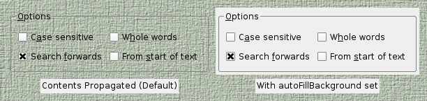

QWidget Class
The QWidget class is the base class of all user interface objects. More...
| Header: | #include <QWidget> |
| CMake: | find_package(Qt6 REQUIRED COMPONENTS Widgets) target_link_libraries(mytarget PRIVATE Qt6::Widgets) |
| qmake: | QT += widgets |
| Inherits: | QObject and QPaintDevice |
| Inherited By: | QAbstractButton, QAbstractSlider, QAbstractSpinBox, QCalendarWidget, QComboBox, QDesignerActionEditorInterface, QDesignerFormWindowInterface, QDesignerObjectInspectorInterface, QDesignerPropertyEditorInterface, QDesignerWidgetBoxInterface, QDialog, QDialogButtonBox, QDockWidget, QFocusFrame, QFrame, QGroupBox, QHelpFilterSettingsWidget, QHelpSearchQueryWidget, QHelpSearchResultWidget, QKeySequenceEdit, QLineEdit, QMainWindow, QMdiSubWindow, QMenu, QMenuBar, QOpenGLWidget, QProgressBar, QQuickWidget, QRhiWidget, QRubberBand, QSizeGrip, QSplashScreen, QSplitterHandle, QStatusBar, QSvgWidget, QTabBar, QTabWidget, QToolBar, and QWizardPage |
Public Types
| enum | RenderFlag { DrawWindowBackground, DrawChildren, IgnoreMask } |
| flags | RenderFlags |
Properties
|
|
Public Functions
| QWidget(QWidget *parent = nullptr, Qt::WindowFlags f = Qt::WindowFlags()) | |
| virtual | ~QWidget() |
| bool | acceptDrops() const |
| QString | accessibleDescription() const |
| QString | accessibleName() const |
| QList<QAction *> | actions() const |
| void | activateWindow() |
| void | addAction(QAction *action) |
(since 6.3) QAction * | addAction(const QString &text) |
(since 6.3) QAction * | addAction(const QIcon &icon, const QString &text) |
(since 6.3) QAction * | addAction(const QString &text, const QObject *receiver, const char *member, Qt::ConnectionType type = Qt::AutoConnection) |
(since 6.3) QAction * | addAction(const QIcon &icon, const QString &text, const QObject *receiver, const char *member, Qt::ConnectionType type = Qt::AutoConnection) |
(since 6.3) QAction * | addAction(const QString &text, Args &&... args) |
(since 6.3) QAction * | addAction(const QIcon &icon, const QString &text, Args &&... args) |
(since 6.3) QAction * | addAction(const QString &text, const QKeySequence &shortcut) |
(since 6.3) QAction * | addAction(const QIcon &icon, const QString &text, const QKeySequence &shortcut) |
(since 6.3) QAction * | addAction(const QString &text, const QKeySequence &shortcut, const QObject *receiver, const char *member, Qt::ConnectionType type = Qt::AutoConnection) |
(since 6.3) QAction * | addAction(const QIcon &icon, const QString &text, const QKeySequence &shortcut, const QObject *receiver, const char *member, Qt::ConnectionType type = Qt::AutoConnection) |
(since 6.3) QAction * | addAction(const QString &text, const QKeySequence &shortcut, Args &&... args) |
(since 6.3) QAction * | addAction(const QIcon &icon, const QString &text, const QKeySequence &shortcut, Args &&... args) |
| void | addActions(const QList<QAction *> &actions) |
| void | adjustSize() |
| bool | autoFillBackground() const |
| QPalette::ColorRole | backgroundRole() const |
| QBackingStore * | backingStore() const |
| QSize | baseSize() const |
| QWidget * | childAt(int x, int y) const |
| QWidget * | childAt(const QPoint &p) const |
| QRect | childrenRect() const |
| QRegion | childrenRegion() const |
| void | clearFocus() |
| void | clearMask() |
| QMargins | contentsMargins() const |
| QRect | contentsRect() const |
| Qt::ContextMenuPolicy | contextMenuPolicy() const |
| QCursor | cursor() const |
| WId | effectiveWinId() const |
| void | ensurePolished() const |
| Qt::FocusPolicy | focusPolicy() const |
| QWidget * | focusProxy() const |
| QWidget * | focusWidget() const |
| const QFont & | font() const |
| QFontInfo | fontInfo() const |
| QFontMetrics | fontMetrics() const |
| QPalette::ColorRole | foregroundRole() const |
| QRect | frameGeometry() const |
| QSize | frameSize() const |
| const QRect & | geometry() const |
| QPixmap | grab(const QRect &rectangle = QRect(QPoint(0, 0), QSize(-1, -1))) |
| void | grabGesture(Qt::GestureType gesture, Qt::GestureFlags flags = Qt::GestureFlags()) |
| void | grabKeyboard() |
| void | grabMouse() |
| void | grabMouse(const QCursor &cursor) |
| int | grabShortcut(const QKeySequence &key, Qt::ShortcutContext context = Qt::WindowShortcut) |
| QGraphicsEffect * | graphicsEffect() const |
| QGraphicsProxyWidget * | graphicsProxyWidget() const |
| bool | hasEditFocus() const |
| bool | hasFocus() const |
| virtual bool | hasHeightForWidth() const |
| bool | hasMouseTracking() const |
| bool | hasTabletTracking() const |
| int | height() const |
| virtual int | heightForWidth(int w) const |
| Qt::InputMethodHints | inputMethodHints() const |
| virtual QVariant | inputMethodQuery(Qt::InputMethodQuery query) const |
| void | insertAction(QAction *before, QAction *action) |
| void | insertActions(QAction *before, const QList<QAction *> &actions) |
| bool | isActiveWindow() const |
| bool | isAncestorOf(const QWidget *child) const |
| bool | isEnabled() const |
| bool | isEnabledTo(const QWidget *ancestor) const |
| bool | isFullScreen() const |
| bool | isHidden() const |
| bool | isMaximized() const |
| bool | isMinimized() const |
| bool | isModal() const |
| bool | isVisible() const |
| bool | isVisibleTo(const QWidget *ancestor) const |
| bool | isWindow() const |
| bool | isWindowModified() const |
| QLayout * | layout() const |
| Qt::LayoutDirection | layoutDirection() const |
| QLocale | locale() const |
(since 6.0) QPointF | mapFrom(const QWidget *parent, const QPointF &pos) const |
| QPoint | mapFrom(const QWidget *parent, const QPoint &pos) const |
(since 6.0) QPointF | mapFromGlobal(const QPointF &pos) const |
| QPoint | mapFromGlobal(const QPoint &pos) const |
(since 6.0) QPointF | mapFromParent(const QPointF &pos) const |
| QPoint | mapFromParent(const QPoint &pos) const |
(since 6.0) QPointF | mapTo(const QWidget *parent, const QPointF &pos) const |
| QPoint | mapTo(const QWidget *parent, const QPoint &pos) const |
(since 6.0) QPointF | mapToGlobal(const QPointF &pos) const |
| QPoint | mapToGlobal(const QPoint &pos) const |
(since 6.0) QPointF | mapToParent(const QPointF &pos) const |
| QPoint | mapToParent(const QPoint &pos) const |
| QRegion | mask() const |
| int | maximumHeight() const |
| QSize | maximumSize() const |
| int | maximumWidth() const |
| int | minimumHeight() const |
| QSize | minimumSize() const |
| virtual QSize | minimumSizeHint() const |
| int | minimumWidth() const |
| void | move(const QPoint &) |
| void | move(int x, int y) |
| QWidget * | nativeParentWidget() const |
| QWidget * | nextInFocusChain() const |
| QRect | normalGeometry() const |
| void | overrideWindowFlags(Qt::WindowFlags flags) |
| const QPalette & | palette() const |
| QWidget * | parentWidget() const |
| QPoint | pos() const |
| QWidget * | previousInFocusChain() const |
| QRect | rect() const |
| void | releaseKeyboard() |
| void | releaseMouse() |
| void | releaseShortcut(int id) |
| void | removeAction(QAction *action) |
| void | render(QPaintDevice *target, const QPoint &targetOffset = QPoint(), const QRegion &sourceRegion = QRegion(), QWidget::RenderFlags renderFlags = RenderFlags(DrawWindowBackground | DrawChildren)) |
| void | render(QPainter *painter, const QPoint &targetOffset = QPoint(), const QRegion &sourceRegion = QRegion(), QWidget::RenderFlags renderFlags = RenderFlags(DrawWindowBackground | DrawChildren)) |
| void | repaint(int x, int y, int w, int h) |
| void | repaint(const QRect &rect) |
| void | repaint(const QRegion &rgn) |
| void | resize(const QSize &) |
| void | resize(int w, int h) |
| bool | restoreGeometry(const QByteArray &geometry) |
| QByteArray | saveGeometry() const |
| QScreen * | screen() const |
| void | scroll(int dx, int dy) |
| void | scroll(int dx, int dy, const QRect &r) |
| void | setAcceptDrops(bool on) |
| void | setAccessibleDescription(const QString &description) |
| void | setAccessibleName(const QString &name) |
| void | setAttribute(Qt::WidgetAttribute attribute, bool on = true) |
| void | setAutoFillBackground(bool enabled) |
| void | setBackgroundRole(QPalette::ColorRole role) |
| void | setBaseSize(const QSize &) |
| void | setBaseSize(int basew, int baseh) |
| void | setContentsMargins(int left, int top, int right, int bottom) |
| void | setContentsMargins(const QMargins &margins) |
| void | setContextMenuPolicy(Qt::ContextMenuPolicy policy) |
| void | setCursor(const QCursor &) |
| void | setEditFocus(bool enable) |
| void | setFixedHeight(int h) |
| void | setFixedSize(const QSize &s) |
| void | setFixedSize(int w, int h) |
| void | setFixedWidth(int w) |
| void | setFocus(Qt::FocusReason reason) |
| void | setFocusPolicy(Qt::FocusPolicy policy) |
| void | setFocusProxy(QWidget *w) |
| void | setFont(const QFont &) |
| void | setForegroundRole(QPalette::ColorRole role) |
| void | setGeometry(const QRect &) |
| void | setGeometry(int x, int y, int w, int h) |
| void | setGraphicsEffect(QGraphicsEffect *effect) |
| void | setInputMethodHints(Qt::InputMethodHints hints) |
| void | setLayout(QLayout *layout) |
| void | setLayoutDirection(Qt::LayoutDirection direction) |
| void | setLocale(const QLocale &locale) |
| void | setMask(const QBitmap &bitmap) |
| void | setMask(const QRegion ®ion) |
| void | setMaximumHeight(int maxh) |
| void | setMaximumSize(const QSize &) |
| void | setMaximumSize(int maxw, int maxh) |
| void | setMaximumWidth(int maxw) |
| void | setMinimumHeight(int minh) |
| void | setMinimumSize(const QSize &) |
| void | setMinimumSize(int minw, int minh) |
| void | setMinimumWidth(int minw) |
| void | setMouseTracking(bool enable) |
| void | setPalette(const QPalette &) |
| void | setParent(QWidget *parent) |
| void | setParent(QWidget *parent, Qt::WindowFlags f) |
| void | setScreen(QScreen *screen) |
| void | setShortcutAutoRepeat(int id, bool enable = true) |
| void | setShortcutEnabled(int id, bool enable = true) |
| void | setSizeIncrement(const QSize &) |
| void | setSizeIncrement(int w, int h) |
| void | setSizePolicy(QSizePolicy) |
| void | setSizePolicy(QSizePolicy::Policy horizontal, QSizePolicy::Policy vertical) |
| void | setStatusTip(const QString &) |
| void | setStyle(QStyle *style) |
| void | setTabletTracking(bool enable) |
| void | setToolTip(const QString &) |
| void | setToolTipDuration(int msec) |
| void | setUpdatesEnabled(bool enable) |
| void | setWhatsThis(const QString &) |
| void | setWindowFilePath(const QString &filePath) |
| void | setWindowFlag(Qt::WindowType flag, bool on = true) |
| void | setWindowFlags(Qt::WindowFlags type) |
| void | setWindowIcon(const QIcon &icon) |
| void | setWindowModality(Qt::WindowModality windowModality) |
| void | setWindowOpacity(qreal level) |
| void | setWindowRole(const QString &role) |
| void | setWindowState(Qt::WindowStates windowState) |
| void | setupUi(QWidget *widget) |
| QSize | size() const |
| virtual QSize | sizeHint() const |
| QSize | sizeIncrement() const |
| QSizePolicy | sizePolicy() const |
| void | stackUnder(QWidget *w) |
| QString | statusTip() const |
| QStyle * | style() const |
| QString | styleSheet() const |
| bool | testAttribute(Qt::WidgetAttribute attribute) const |
| QString | toolTip() const |
| int | toolTipDuration() const |
| bool | underMouse() const |
| void | ungrabGesture(Qt::GestureType gesture) |
| void | unsetCursor() |
| void | unsetLayoutDirection() |
| void | unsetLocale() |
| void | update(int x, int y, int w, int h) |
| void | update(const QRect &rect) |
| void | update(const QRegion &rgn) |
| void | updateGeometry() |
| bool | updatesEnabled() const |
| QRegion | visibleRegion() const |
| QString | whatsThis() const |
| int | width() const |
| WId | winId() const |
| QWidget * | window() const |
| QString | windowFilePath() const |
| Qt::WindowFlags | windowFlags() const |
| QWindow * | windowHandle() const |
| QIcon | windowIcon() const |
| Qt::WindowModality | windowModality() const |
| qreal | windowOpacity() const |
| QString | windowRole() const |
| Qt::WindowStates | windowState() const |
| QString | windowTitle() const |
| Qt::WindowType | windowType() const |
| int | x() const |
| int | y() const |
Reimplemented Public Functions
| virtual QPaintEngine * | paintEngine() const override |
Public Slots
| bool | close() |
| void | hide() |
| void | lower() |
| void | raise() |
| void | repaint() |
| void | setDisabled(bool disable) |
| void | setEnabled(bool) |
| void | setFocus() |
| void | setHidden(bool hidden) |
| void | setStyleSheet(const QString &styleSheet) |
| virtual void | setVisible(bool visible) |
| void | setWindowModified(bool) |
| void | setWindowTitle(const QString &) |
| void | show() |
| void | showFullScreen() |
| void | showMaximized() |
| void | showMinimized() |
| void | showNormal() |
| void | update() |
Signals
| void | customContextMenuRequested(const QPoint &pos) |
| void | windowIconChanged(const QIcon &icon) |
| void | windowTitleChanged(const QString &title) |
Static Public Members
| QWidget * | createWindowContainer(QWindow *window, QWidget *parent = nullptr, Qt::WindowFlags flags = Qt::WindowFlags()) |
| QWidget * | find(WId id) |
| QWidget * | keyboardGrabber() |
| QWidget * | mouseGrabber() |
| void | setTabOrder(QWidget *first, QWidget *second) |
(since 6.6) void | setTabOrder(std::initializer_list<QWidget *> widgets) |
Protected Functions
| virtual void | actionEvent(QActionEvent *event) |
| virtual void | changeEvent(QEvent *event) |
| virtual void | closeEvent(QCloseEvent *event) |
| virtual void | contextMenuEvent(QContextMenuEvent *event) |
| void | create(WId window = 0, bool initializeWindow = true, bool destroyOldWindow = true) |
| void | destroy(bool destroyWindow = true, bool destroySubWindows = true) |
| virtual void | dragEnterEvent(QDragEnterEvent *event) |
| virtual void | dragLeaveEvent(QDragLeaveEvent *event) |
| virtual void | dragMoveEvent(QDragMoveEvent *event) |
| virtual void | dropEvent(QDropEvent *event) |
| virtual void | enterEvent(QEnterEvent *event) |
| virtual void | focusInEvent(QFocusEvent *event) |
| bool | focusNextChild() |
| virtual bool | focusNextPrevChild(bool next) |
| virtual void | focusOutEvent(QFocusEvent *event) |
| bool | focusPreviousChild() |
| virtual void | hideEvent(QHideEvent *event) |
| virtual void | inputMethodEvent(QInputMethodEvent *event) |
| virtual void | keyPressEvent(QKeyEvent *event) |
| virtual void | keyReleaseEvent(QKeyEvent *event) |
| virtual void | leaveEvent(QEvent *event) |
| virtual void | mouseDoubleClickEvent(QMouseEvent *event) |
| virtual void | mouseMoveEvent(QMouseEvent *event) |
| virtual void | mousePressEvent(QMouseEvent *event) |
| virtual void | mouseReleaseEvent(QMouseEvent *event) |
| virtual void | moveEvent(QMoveEvent *event) |
| virtual bool | nativeEvent(const QByteArray &eventType, void *message, qintptr *result) |
| virtual void | paintEvent(QPaintEvent *event) |
| virtual void | resizeEvent(QResizeEvent *event) |
| virtual void | showEvent(QShowEvent *event) |
| virtual void | tabletEvent(QTabletEvent *event) |
| virtual void | wheelEvent(QWheelEvent *event) |
Reimplemented Protected Functions
| virtual bool | event(QEvent *event) override |
| virtual void | initPainter(QPainter *painter) const override |
| virtual int | metric(QPaintDevice::PaintDeviceMetric m) const override |
Protected Slots
| void | updateMicroFocus(Qt::InputMethodQuery query = Qt::ImQueryAll) |
Macros
Detailed Description
The widget is the atom of the user interface: it receives mouse, keyboard and other events from the window system, and paints a representation of itself on the screen. Every widget is rectangular, and they are sorted in a Z-order. A widget is clipped by its parent and by the widgets in front of it.
A widget that is not embedded in a parent widget is called a window. Usually, windows have a frame and a title bar, although it is also possible to create windows without such decoration using suitable window flags. In Qt, QMainWindow and the various subclasses of QDialog are the most common window types.
Every widget's constructor accepts one or two standard arguments:
QWidget *parent = nullptris the parent of the new widget. If it isnullptr(the default), the new widget will be a window. If not, it will be a child of parent, and be constrained by parent's geometry (unless you specify Qt::Window as window flag).Qt::WindowFlags f = { }(where available) sets the window flags; the default is suitable for most widgets, but to get, for example, a window without a window system frame, you must use special flags.
QWidget has many member functions, but some of them have little direct functionality; for example, QWidget has a font property, but never uses this itself. There are many subclasses that provide real functionality, such as QLabel, QPushButton, QListWidget, and QTabWidget.
Top-Level and Child Widgets
A widget without a parent widget is always an independent window (top-level widget). For these widgets, setWindowTitle() and setWindowIcon() set the title bar and icon, respectively.
Non-window widgets are child widgets, displayed within their parent widgets. Most widgets in Qt are mainly useful as child widgets. For example, it is possible to display a button as a top-level window, but most people prefer to put their buttons inside other widgets, such as QDialog.

The diagram above shows a QGroupBox widget being used to hold various child widgets in a layout provided by QGridLayout. The QLabel child widgets have been outlined to indicate their full sizes.
If you want to use a QWidget to hold child widgets, you will usually want to add a layout to the parent QWidget. See Layout Management for more information.
Composite Widgets
When a widget is used as a container to group a number of child widgets, it is known as a composite widget. These can be created by constructing a widget with the required visual properties - a QFrame, for example - and adding child widgets to it, usually managed by a layout.
Composite widgets can also be created by subclassing a standard widget, such as QWidget or QFrame, and adding the necessary layout and child widgets in the constructor of the subclass. Many of the examples provided with Qt use this approach, and it is also covered in the Qt Widgets Tutorial.
Custom Widgets and Painting
Since QWidget is a subclass of QPaintDevice, subclasses can be used to display custom content that is composed using a series of painting operations with an instance of the QPainter class. This approach contrasts with the canvas-style approach used by the Graphics View Framework where items are added to a scene by the application and are rendered by the framework itself.
Each widget performs all painting operations from within its paintEvent() function. This is called whenever the widget needs to be redrawn, either because of some external change or when requested by the application.
The Analog Clock example shows how a simple widget can handle paint events.
Size Hints and Size Policies
When implementing a new widget, it is almost always useful to reimplement sizeHint() to provide a reasonable default size for the widget and to set the correct size policy with setSizePolicy().
By default, composite widgets that do not provide a size hint will be sized according to the space requirements of their child widgets.
The size policy lets you supply good default behavior for the layout management system, so that other widgets can contain and manage yours easily. The default size policy indicates that the size hint represents the preferred size of the widget, and this is often good enough for many widgets.
Note: The size of top-level widgets are constrained to 2/3 of the desktop's height and width. You can resize() the widget manually if these bounds are inadequate.
Events
Widgets respond to events that are typically caused by user actions. Qt delivers events to widgets by calling specific event handler functions with instances of QEvent subclasses containing information about each event.
If your widget only contains child widgets, you probably don't need to implement any event handlers. If you want to detect a mouse click in a child widget, call the child's underMouse() function inside the widget's mousePressEvent().
The Scribble example implements a wider set of events to handle mouse movement, button presses, and window resizing.
You will need to supply the behavior and content for your own widgets, but here is a brief overview of the events that are relevant to QWidget, starting with the most common ones:
- paintEvent() is called whenever the widget needs to be repainted. Every widget displaying custom content must implement it. Painting using a QPainter can only take place in a paintEvent() or a function called by a paintEvent().
- resizeEvent() is called when the widget has been resized.
- mousePressEvent() is called when a mouse button is pressed while the mouse cursor is inside the widget, or when the widget has grabbed the mouse using grabMouse(). Pressing the mouse without releasing it is effectively the same as calling grabMouse().
- mouseReleaseEvent() is called when a mouse button is released. A widget receives mouse release events when it has received the corresponding mouse press event. This means that if the user presses the mouse inside your widget, then drags the mouse somewhere else before releasing the mouse button, your widget receives the release event. There is one exception: if a popup menu appears while the mouse button is held down, this popup immediately steals the mouse events.
- mouseDoubleClickEvent() is called when the user double-clicks in the widget. If the user double-clicks, the widget receives a mouse press event, a mouse release event, (a mouse click event,) a second mouse press, this event and finally a second mouse release event. (Some mouse move events may also be received if the mouse is not held steady during this operation.) It is not possible to distinguish a click from a double-click until the second click arrives. (This is one reason why most GUI books recommend that double-clicks be an extension of single-clicks, rather than trigger a different action.)
Widgets that accept keyboard input need to reimplement a few more event handlers:
- keyPressEvent() is called whenever a key is pressed, and again when a key has been held down long enough for it to auto-repeat. The Tab and Shift+Tab keys are only passed to the widget if they are not used by the focus-change mechanisms. To force those keys to be processed by your widget, you must reimplement QWidget::event().
- focusInEvent() is called when the widget gains keyboard focus (assuming you have called setFocusPolicy()). Well-behaved widgets indicate that they own the keyboard focus in a clear but discreet way.
- focusOutEvent() is called when the widget loses keyboard focus.
You may be required to also reimplement some of the less common event handlers:
- mouseMoveEvent() is called whenever the mouse moves while a mouse button is held down. This can be useful during drag and drop operations. If you call setMouseTracking(true), you get mouse move events even when no buttons are held down. (See also the Drag and Drop guide.)
- keyReleaseEvent() is called whenever a key is released and while it is held down (if the key is auto-repeating). In that case, the widget will receive a pair of key release and key press event for every repeat. The Tab and Shift+Tab keys are only passed to the widget if they are not used by the focus-change mechanisms. To force those keys to be processed by your widget, you must reimplement QWidget::event().
- wheelEvent() is called whenever the user turns the mouse wheel while the widget has the focus.
- enterEvent() is called when the mouse enters the widget's screen space. (This excludes screen space owned by any of the widget's children.)
- leaveEvent() is called when the mouse leaves the widget's screen space. If the mouse enters a child widget, it will not cause a leaveEvent().
- moveEvent() is called when the widget has been moved relative to its parent.
- closeEvent() is called when the user closes the widget (or when close() is called).
There are also some rather obscure events described in the documentation for QEvent::Type. To handle these events, you need to reimplement event() directly.
The default implementation of event() handles Tab and Shift+Tab (to move the keyboard focus), and passes on most of the other events to one of the more specialized handlers above.
Events and the mechanism used to deliver them are covered in The Event System.
Groups of Functions and Properties
Widget Style Sheets
In addition to the standard widget styles for each platform, widgets can also be styled according to rules specified in a style sheet. This feature enables you to customize the appearance of specific widgets to provide visual cues to users about their purpose. For example, a button could be styled in a particular way to indicate that it performs a destructive action.
The use of widget style sheets is described in more detail in the Qt Style Sheets document.
Transparency and Double Buffering
QWidget automatically double-buffers its painting, so there is no need to write double-buffering code in paintEvent() to avoid flicker.
The contents of parent widgets are propagated by default to each of their children as long as Qt::WA_PaintOnScreen is not set. Custom widgets can be written to take advantage of this feature by updating irregular regions (to create non-rectangular child widgets), or painting with colors that have less than full alpha component. The following diagram shows how attributes and properties of a custom widget can be fine-tuned to achieve different effects.

In the above diagram, a semi-transparent rectangular child widget with an area removed is constructed and added to a parent widget (a QLabel showing a pixmap). Then, different properties and widget attributes are set to achieve different effects:
- The left widget has no additional properties or widget attributes set. This default state suits most custom widgets that have transparency, are irregularly-shaped, or do not paint over their entire area with an opaque brush.
- The center widget has the autoFillBackground property set. This property is used with custom widgets that rely on the widget to supply a default background, and do not paint over their entire area with an opaque brush.
- The right widget has the Qt::WA_OpaquePaintEvent widget attribute set. This indicates that the widget will paint over its entire area with opaque colors. The widget's area will initially be uninitialized, represented in the diagram with a red diagonal grid pattern that shines through the overpainted area.
To rapidly update custom widgets with simple background colors, such as real-time plotting or graphing widgets, it is better to define a suitable background color (using setBackgroundRole() with the QPalette::Window role), set the autoFillBackground property, and only implement the necessary drawing functionality in the widget's paintEvent().
To rapidly update custom widgets that constantly paint over their entire areas with opaque content, for example, video streaming widgets, it is better to set the widget's Qt::WA_OpaquePaintEvent, avoiding any unnecessary overhead associated with repainting the widget's background.
If a widget has both the Qt::WA_OpaquePaintEvent widget attribute and the autoFillBackground property set, the Qt::WA_OpaquePaintEvent attribute takes precedence. Depending on your requirements, you should choose either one of them.
The contents of parent widgets are also propagated to standard Qt widgets. This can lead to some unexpected results if the parent widget is decorated in a non-standard way, as shown in the diagram below.

The scope for customizing the painting behavior of standard Qt widgets, without resorting to subclassing, is slightly less than that possible for custom widgets. Usually, the desired appearance of a standard widget can be achieved by setting its autoFillBackground property.
Creating Translucent Windows
You can create windows with translucent regions on window systems that support compositing.
To enable this feature in a top-level widget, set its Qt::WA_TranslucentBackground attribute with setAttribute() and ensure that its background is painted with non-opaque colors in the regions you want to be partially transparent.
Platform notes:
- X11: This feature relies on the use of an X server that supports ARGB visuals and a compositing window manager.
- Windows: The widget needs to have the Qt::FramelessWindowHint window flag set for the translucency to work.
- macOS: The widget needs to have the Qt::FramelessWindowHint window flag set for the translucency to work.
Native Widgets vs Alien Widgets
Alien widgets are widgets unknown to the windowing system. They do not have a native window handle associated with them. This feature significantly speeds up widget painting, resizing, and removes flicker.
Should you require the old behavior with native windows, choose one of the following options:
- Use the
QT_USE_NATIVE_WINDOWS=1in your environment. - Set the Qt::AA_NativeWindows attribute on your application. All widgets will be native widgets.
- Set the Qt::WA_NativeWindow attribute on widgets: The widget itself and all its ancestors will become native (unless Qt::WA_DontCreateNativeAncestors is set).
- Call QWidget::winId to enforce a native window (this implies 3).
- Set the Qt::WA_PaintOnScreen attribute to enforce a native window (this implies 3).
See also QEvent, QPainter, QGridLayout, and QBoxLayout.
Member Type Documentation
enum QWidget::RenderFlag
flags QWidget::RenderFlags
This enum describes how to render the widget when calling QWidget::render().
| Constant | Value | Description |
|---|---|---|
QWidget::DrawWindowBackground | 0x1 | If you enable this option, the widget's background is rendered into the target even if autoFillBackground is not set. By default, this option is enabled. |
QWidget::DrawChildren | 0x2 | If you enable this option, the widget's children are rendered recursively into the target. By default, this option is enabled. |
QWidget::IgnoreMask | 0x4 | If you enable this option, the widget's QWidget::mask() is ignored when rendering into the target. By default, this option is disabled. |
The RenderFlags type is a typedef for QFlags<RenderFlag>. It stores an OR combination of RenderFlag values.
Property Documentation
acceptDrops : bool
This property holds whether drop events are enabled for this widget
Setting this property to true announces to the system that this widget may be able to accept drop events.
If the widget is the desktop (windowType() == Qt::Desktop), this may fail if another application is using the desktop; you can call acceptDrops() to test if this occurs.
Warning: Do not modify this property in a drag and drop event handler.
By default, this property is false.
Access functions:
| bool | acceptDrops() const |
| void | setAcceptDrops(bool on) |
See also Drag and Drop.
accessibleDescription : QString
This property holds the widget's description as seen by assistive technologies
The accessible description of a widget should convey what a widget does. While the accessibleName should be a short and concise string (e.g. Save), the description should give more context, such as Saves the current document.
This property has to be localized.
By default, this property contains an empty string and Qt falls back to using the tool tip to provide this information.
Access functions:
| QString | accessibleDescription() const |
| void | setAccessibleDescription(const QString &description) |
See also QWidget::accessibleName and QAccessibleInterface::text().
accessibleName : QString
This property holds the widget's name as seen by assistive technologies
This is the primary name by which assistive technology such as screen readers announce this widget. For most widgets setting this property is not required. For example for QPushButton the button's text will be used.
It is important to set this property when the widget does not provide any text. For example a button that only contains an icon needs to set this property to work with screen readers. The name should be short and equivalent to the visual information conveyed by the widget.
This property has to be localized.
By default, this property contains an empty string.
Access functions:
| QString | accessibleName() const |
| void | setAccessibleName(const QString &name) |
See also QWidget::accessibleDescription and QAccessibleInterface::text().
autoFillBackground : bool
This property holds whether the widget background is filled automatically
If enabled, this property will cause Qt to fill the background of the widget before invoking the paint event. The color used is defined by the QPalette::Window color role from the widget's palette.
In addition, Windows are always filled with QPalette::Window, unless the WA_OpaquePaintEvent or WA_NoSystemBackground attributes are set.
This property cannot be turned off (i.e., set to false) if a widget's parent has a static gradient for its background.
Warning: Use this property with caution in conjunction with Qt Style Sheets. When a widget has a style sheet with a valid background or a border-image, this property is automatically disabled.
By default, this property is false.
Access functions:
| bool | autoFillBackground() const |
| void | setAutoFillBackground(bool enabled) |
See also Qt::WA_OpaquePaintEvent, Qt::WA_NoSystemBackground, and Transparency and Double Buffering.
baseSize : QSize
This property holds the base size of the widget
The base size is used to calculate a proper widget size if the widget defines sizeIncrement().
By default, for a newly-created widget, this property contains a size with zero width and height.
Access functions:
| QSize | baseSize() const |
| void | setBaseSize(const QSize &) |
| void | setBaseSize(int basew, int baseh) |
See also setSizeIncrement().
[read-only] childrenRect : const QRect
This property holds the bounding rectangle of the widget's children
Hidden children are excluded.
By default, for a widget with no children, this property contains a rectangle with zero width and height located at the origin.
Access functions:
| QRect | childrenRect() const |
See also childrenRegion() and geometry().
[read-only] childrenRegion : const QRegion
This property holds the combined region occupied by the widget's children
Hidden children are excluded.
By default, for a widget with no children, this property contains an empty region.
Access functions:
| QRegion | childrenRegion() const |
See also childrenRect(), geometry(), and mask().
contextMenuPolicy : Qt::ContextMenuPolicy
how the widget shows a context menu
The default value of this property is Qt::DefaultContextMenu, which means the contextMenuEvent() handler is called. Other values are Qt::NoContextMenu, Qt::PreventContextMenu, Qt::ActionsContextMenu, and Qt::CustomContextMenu. With Qt::CustomContextMenu, the signal customContextMenuRequested() is emitted.
Access functions:
| Qt::ContextMenuPolicy | contextMenuPolicy() const |
| void | setContextMenuPolicy(Qt::ContextMenuPolicy policy) |
See also contextMenuEvent(), customContextMenuRequested(), and actions().
cursor : QCursor
This property holds the cursor shape for this widget
The mouse cursor will assume this shape when it's over this widget. See the list of predefined cursor objects for a range of useful shapes.
An editor widget might use an I-beam cursor:
setCursor(Qt::IBeamCursor);
If no cursor has been set, or after a call to unsetCursor(), the parent's cursor is used.
By default, this property contains a cursor with the Qt::ArrowCursor shape.
Some underlying window implementations will reset the cursor if it leaves a widget even if the mouse is grabbed. If you want to have a cursor set for all widgets, even when outside the window, consider QGuiApplication::setOverrideCursor().
Access functions:
| QCursor | cursor() const |
| void | setCursor(const QCursor &) |
| void | unsetCursor() |
See also QGuiApplication::setOverrideCursor().
enabled : bool
This property holds whether the widget is enabled
In general an enabled widget handles keyboard and mouse events; a disabled widget does not. An exception is made with QAbstractButton.
Some widgets display themselves differently when they are disabled. For example a button might draw its label grayed out. If your widget needs to know when it becomes enabled or disabled, you can use the changeEvent() with type QEvent::EnabledChange.
Disabling a widget implicitly disables all its children. Enabling respectively enables all child widgets unless they have been explicitly disabled. It it not possible to explicitly enable a child widget which is not a window while its parent widget remains disabled.
By default, this property is true.
Access functions:
| bool | isEnabled() const |
| void | setEnabled(bool) |
See also isEnabledTo(), QKeyEvent, QMouseEvent, and changeEvent().
[read-only] focus : const bool
This property holds whether this widget (or its focus proxy) has the keyboard input focus
By default, this property is false.
Note: Obtaining the value of this property for a widget is effectively equivalent to checking whether QApplication::focusWidget() refers to the widget.
Access functions:
| bool | hasFocus() const |
See also setFocus(), clearFocus(), setFocusPolicy(), and QApplication::focusWidget().
focusPolicy : Qt::FocusPolicy
This property holds the way the widget accepts keyboard focus
The policy is Qt::TabFocus if the widget accepts keyboard focus by tabbing, Qt::ClickFocus if the widget accepts focus by clicking, Qt::StrongFocus if it accepts both, and Qt::NoFocus (the default) if it does not accept focus at all.
You must enable keyboard focus for a widget if it processes keyboard events. This is normally done from the widget's constructor. For instance, the QLineEdit constructor calls setFocusPolicy(Qt::StrongFocus).
If the widget has a focus proxy, then the focus policy will be propagated to it.
Access functions:
| Qt::FocusPolicy | focusPolicy() const |
| void | setFocusPolicy(Qt::FocusPolicy policy) |
See also focusInEvent(), focusOutEvent(), keyPressEvent(), keyReleaseEvent(), and enabled.
font : QFont
This property holds the font currently set for the widget
This property describes the widget's requested font. The font is used by the widget's style when rendering standard components, and is available as a means to ensure that custom widgets can maintain consistency with the native platform's look and feel. It's common that different platforms, or different styles, define different fonts for an application.
When you assign a new font to a widget, the properties from this font are combined with the widget's default font to form the widget's final font. You can call fontInfo() to get a copy of the widget's final font. The final font is also used to initialize QPainter's font.
The default depends on the system environment. QApplication maintains a system/theme font which serves as a default for all widgets. There may also be special font defaults for certain types of widgets. You can also define default fonts for widgets yourself by passing a custom font and the name of a widget to QApplication::setFont(). Finally, the font is matched against Qt's font database to find the best match.
QWidget propagates explicit font properties from parent to child. If you change a specific property on a font and assign that font to a widget, that property will propagate to all the widget's children, overriding any system defaults for that property. Note that fonts by default don't propagate to windows (see isWindow()) unless the Qt::WA_WindowPropagation attribute is enabled.
QWidget's font propagation is similar to its palette propagation.
The current style, which is used to render the content of all standard Qt widgets, is free to choose to use the widget font, or in some cases, to ignore it (partially, or completely). In particular, certain styles like GTK style, Mac style, and Windows Vista style, apply special modifications to the widget font to match the platform's native look and feel. Because of this, assigning properties to a widget's font is not guaranteed to change the appearance of the widget. Instead, you may choose to apply a styleSheet.
Note: If Qt Style Sheets are used on the same widget as setFont(), style sheets will take precedence if the settings conflict.
Access functions:
| const QFont & | font() const |
| void | setFont(const QFont &) |
See also fontInfo() and fontMetrics().
[read-only] frameGeometry : const QRect
geometry of the widget relative to its parent including any window frame
See the Window Geometry documentation for an overview of geometry issues with windows.
By default, this property contains a value that depends on the user's platform and screen geometry.
Access functions:
| QRect | frameGeometry() const |
See also geometry(), x(), y(), and pos().
[read-only] frameSize : const QSize
This property holds the size of the widget including any window frame
By default, this property contains a value that depends on the user's platform and screen geometry.
Access functions:
| QSize | frameSize() const |
[read-only] fullScreen : const bool
This property holds whether the widget is shown in full screen mode
A widget in full screen mode occupies the whole screen area and does not display window decorations, such as a title bar.
By default, this property is false.
Access functions:
| bool | isFullScreen() const |
See also windowState(), minimized, and maximized.
geometry : QRect
This property holds the geometry of the widget relative to its parent and excluding the window frame
When changing the geometry, the widget, if visible, receives a move event (moveEvent()) and/or a resize event (resizeEvent()) immediately. If the widget is not currently visible, it is guaranteed to receive appropriate events before it is shown.
The size component is adjusted if it lies outside the range defined by minimumSize() and maximumSize().
Warning: Calling setGeometry() inside resizeEvent() or moveEvent() can lead to infinite recursion.
See the Window Geometry documentation for an overview of geometry issues with windows.
By default, this property contains a value that depends on the user's platform and screen geometry.
Access functions:
| const QRect & | geometry() const |
| void | setGeometry(int x, int y, int w, int h) |
| void | setGeometry(const QRect &) |
See also frameGeometry(), rect(), move(), resize(), moveEvent(), resizeEvent(), minimumSize(), and maximumSize().
[read-only] height : const int
This property holds the height of the widget excluding any window frame
See the Window Geometry documentation for an overview of geometry issues with windows.
By default, this property contains a value that depends on the user's platform and screen geometry.
Access functions:
| int | height() const |
See also geometry, width, and size.
inputMethodHints : Qt::InputMethodHints
What input method specific hints the widget has.
This is only relevant for input widgets. It is used by the input method to retrieve hints as to how the input method should operate. For example, if the Qt::ImhFormattedNumbersOnly flag is set, the input method may change its visual components to reflect that only numbers can be entered.
Warning: Some widgets require certain flags to work as intended. To set a flag, do w->setInputMethodHints(w->inputMethodHints()|f) instead of w->setInputMethodHints(f).
Note: The flags are only hints, so the particular input method implementation is free to ignore them. If you want to be sure that a certain type of characters are entered, you should also set a QValidator on the widget.
The default value is Qt::ImhNone.
Access functions:
| Qt::InputMethodHints | inputMethodHints() const |
| void | setInputMethodHints(Qt::InputMethodHints hints) |
See also inputMethodQuery().
[read-only] isActiveWindow : const bool
This property holds whether this widget's window is the active window
The active window is the window that contains the widget that has keyboard focus (The window may still have focus if it has no widgets or none of its widgets accepts keyboard focus).
When popup windows are visible, this property is true for both the active window and for the popup.
By default, this property is false.
Access functions:
| bool | isActiveWindow() const |
See also activateWindow() and QApplication::activeWindow().
layoutDirection : Qt::LayoutDirection
This property holds the layout direction for this widget.
Note: This method no longer affects text layout direction since Qt 4.7.
By default, this property is set to Qt::LeftToRight.
When the layout direction is set on a widget, it will propagate to the widget's children, but not to a child that is a window and not to a child for which setLayoutDirection() has been explicitly called. Also, child widgets added after setLayoutDirection() has been called for the parent do not inherit the parent's layout direction.
Access functions:
| Qt::LayoutDirection | layoutDirection() const |
| void | setLayoutDirection(Qt::LayoutDirection direction) |
| void | unsetLayoutDirection() |
See also QApplication::layoutDirection.
locale : QLocale
This property holds the widget's locale
As long as no special locale has been set, this is either the parent's locale or (if this widget is a top level widget), the default locale.
If the widget displays dates or numbers, these should be formatted using the widget's locale.
Access functions:
| QLocale | locale() const |
| void | setLocale(const QLocale &locale) |
| void | unsetLocale() |
See also QLocale and QLocale::setDefault().
[read-only] maximized : const bool
This property holds whether this widget is maximized
This property is only relevant for windows.
Note: Due to limitations on some window systems, this does not always report the expected results (e.g., if the user on X11 maximizes the window via the window manager, Qt has no way of distinguishing this from any other resize). This is expected to improve as window manager protocols evolve.
By default, this property is false.
Access functions:
| bool | isMaximized() const |
See also windowState(), showMaximized(), visible, show(), hide(), showNormal(), and minimized.
maximumHeight : int
This property holds the widget's maximum height in pixels
This property corresponds to the height held by the maximumSize property.
By default, this property contains a value of 16777215.
Note: The definition of the QWIDGETSIZE_MAX macro limits the maximum size of widgets.
Access functions:
| int | maximumHeight() const |
| void | setMaximumHeight(int maxh) |
See also maximumSize and maximumWidth.
maximumSize : QSize
This property holds the widget's maximum size in pixels
The widget cannot be resized to a larger size than the maximum widget size.
By default, this property contains a size in which both width and height have values of 16777215.
Note: The definition of the QWIDGETSIZE_MAX macro limits the maximum size of widgets.
Access functions:
| QSize | maximumSize() const |
| void | setMaximumSize(const QSize &) |
| void | setMaximumSize(int maxw, int maxh) |
See also maximumWidth, maximumHeight, minimumSize, and sizeIncrement.
maximumWidth : int
This property holds the widget's maximum width in pixels
This property corresponds to the width held by the maximumSize property.
By default, this property contains a value of 16777215.
Note: The definition of the QWIDGETSIZE_MAX macro limits the maximum size of widgets.
Access functions:
| int | maximumWidth() const |
| void | setMaximumWidth(int maxw) |
See also maximumSize and maximumHeight.
[read-only] minimized : const bool
This property holds whether this widget is minimized (iconified)
This property is only relevant for windows.
By default, this property is false.
Access functions:
| bool | isMinimized() const |
See also showMinimized(), visible, show(), hide(), showNormal(), and maximized.
minimumHeight : int
This property holds the widget's minimum height in pixels
This property corresponds to the height held by the minimumSize property.
By default, this property has a value of 0.
Access functions:
| int | minimumHeight() const |
| void | setMinimumHeight(int minh) |
See also minimumSize and minimumWidth.
minimumSize : QSize
This property holds the widget's minimum size
The widget cannot be resized to a smaller size than the minimum widget size. The widget's size is forced to the minimum size if the current size is smaller.
The minimum size set by this function will override the minimum size defined by QLayout. To unset the minimum size, use a value of QSize(0, 0).
By default, this property contains a size with zero width and height.
Access functions:
| QSize | minimumSize() const |
| void | setMinimumSize(const QSize &) |
| void | setMinimumSize(int minw, int minh) |
See also minimumWidth, minimumHeight, maximumSize, and sizeIncrement.
[read-only] minimumSizeHint : const QSize
This property holds the recommended minimum size for the widget
If the value of this property is an invalid size, no minimum size is recommended.
The default implementation of minimumSizeHint() returns an invalid size if there is no layout for this widget, and returns the layout's minimum size otherwise. Most built-in widgets reimplement minimumSizeHint().
QLayout will never resize a widget to a size smaller than the minimum size hint unless minimumSize() is set or the size policy is set to QSizePolicy::Ignore. If minimumSize() is set, the minimum size hint will be ignored.
Access functions:
| virtual QSize | minimumSizeHint() const |
See also QSize::isValid(), resize(), setMinimumSize(), and sizePolicy().
minimumWidth : int
This property holds the widget's minimum width in pixels
This property corresponds to the width held by the minimumSize property.
By default, this property has a value of 0.
Access functions:
| int | minimumWidth() const |
| void | setMinimumWidth(int minw) |
See also minimumSize and minimumHeight.
[read-only] modal : const bool
This property holds whether the widget is a modal widget
This property only makes sense for windows. A modal widget prevents widgets in all other windows from getting any input.
By default, this property is false.
Access functions:
| bool | isModal() const |
See also isWindow(), windowModality, and QDialog.
mouseTracking : bool
This property holds whether mouse tracking is enabled for the widget
If mouse tracking is disabled (the default), the widget only receives mouse move events when at least one mouse button is pressed while the mouse is being moved.
If mouse tracking is enabled, the widget receives mouse move events even if no buttons are pressed.
Access functions:
| bool | hasMouseTracking() const |
| void | setMouseTracking(bool enable) |
See also mouseMoveEvent().
[read-only] normalGeometry : const QRect
This property holds the geometry of the widget as it will appear when shown as a normal (not maximized or full screen) top-level widget
If the widget is already in this state the normal geometry will reflect the widget's current geometry().
For child widgets this property always holds an empty rectangle.
By default, this property contains an empty rectangle.
Access functions:
| QRect | normalGeometry() const |
See also QWidget::windowState() and QWidget::geometry.
palette : QPalette
This property holds the widget's palette
This property describes the widget's palette. The palette is used by the widget's style when rendering standard components, and is available as a means to ensure that custom widgets can maintain consistency with the native platform's look and feel. It's common that different platforms, or different styles, have different palettes.
When you assign a new palette to a widget, the color roles from this palette are combined with the widget's default palette to form the widget's final palette. The palette entry for the widget's background role is used to fill the widget's background (see QWidget::autoFillBackground), and the foreground role initializes QPainter's pen.
The default depends on the system environment. QApplication maintains a system/theme palette which serves as a default for all widgets. There may also be special palette defaults for certain types of widgets (e.g., on Windows Vista, all classes that derive from QMenuBar have a special default palette). You can also define default palettes for widgets yourself by passing a custom palette and the name of a widget to QApplication::setPalette(). Finally, the style always has the option of polishing the palette as it's assigned (see QStyle::polish()).
QWidget propagates explicit palette roles from parent to child. If you assign a brush or color to a specific role on a palette and assign that palette to a widget, that role will propagate to all the widget's children, overriding any system defaults for that role. Note that palettes by default don't propagate to windows (see isWindow()) unless the Qt::WA_WindowPropagation attribute is enabled.
QWidget's palette propagation is similar to its font propagation.
The current style, which is used to render the content of all standard Qt widgets, is free to choose colors and brushes from the widget palette, or, in some cases, to ignore the palette (partially, or completely). In particular, certain styles like GTK style, Mac style, and Windows Vista style, depend on third party APIs to render the content of widgets, and these styles typically do not follow the palette. Because of this, assigning roles to a widget's palette is not guaranteed to change the appearance of the widget. Instead, you may choose to apply a styleSheet.
Warning: Do not use this function in conjunction with Qt Style Sheets. When using style sheets, the palette of a widget can be customized using the "color", "background-color", "selection-color", "selection-background-color" and "alternate-background-color".
Access functions:
| const QPalette & | palette() const |
| void | setPalette(const QPalette &) |
See also QGuiApplication::palette(), QWidget::font(), and Qt Style Sheets.
pos : QPoint
This property holds the position of the widget within its parent widget
If the widget is a window, the position is that of the widget on the desktop, including its frame.
When changing the position, the widget, if visible, receives a move event (moveEvent()) immediately. If the widget is not currently visible, it is guaranteed to receive an event before it is shown.
By default, this property contains a position that refers to the origin.
Warning: Calling move() or setGeometry() inside moveEvent() can lead to infinite recursion.
See the Window Geometry documentation for an overview of geometry issues with windows.
Note: Not all windowing systems support setting or querying top level window positions. On such a system, programmatically moving windows may not have any effect, and artificial values may be returned for the current positions, such as QPoint(0, 0).
Access functions:
| QPoint | pos() const |
| void | move(int x, int y) |
| void | move(const QPoint &) |
See also frameGeometry, size, x(), and y().
[read-only] rect : const QRect
This property holds the internal geometry of the widget excluding any window frame
The rect property equals QRect(0, 0, width(), height()).
See the Window Geometry documentation for an overview of geometry issues with windows.
By default, this property contains a value that depends on the user's platform and screen geometry.
Access functions:
| QRect | rect() const |
See also size.
size : QSize
This property holds the size of the widget excluding any window frame
If the widget is visible when it is being resized, it receives a resize event (resizeEvent()) immediately. If the widget is not currently visible, it is guaranteed to receive an event before it is shown.
The size is adjusted if it lies outside the range defined by minimumSize() and maximumSize().
By default, this property contains a value that depends on the user's platform and screen geometry.
Warning: Calling resize() or setGeometry() inside resizeEvent() can lead to infinite recursion.
Note: Setting the size to QSize(0, 0) will cause the widget to not appear on screen. This also applies to windows.
Access functions:
| QSize | size() const |
| void | resize(int w, int h) |
| void | resize(const QSize &) |
See also pos, geometry, minimumSize, maximumSize, resizeEvent(), and adjustSize().
[read-only] sizeHint : const QSize
This property holds the recommended size for the widget
If the value of this property is an invalid size, no size is recommended.
The default implementation of sizeHint() returns an invalid size if there is no layout for this widget, and returns the layout's preferred size otherwise.
Access functions:
| virtual QSize | sizeHint() const |
See also QSize::isValid(), minimumSizeHint(), sizePolicy(), setMinimumSize(), and updateGeometry().
sizeIncrement : QSize
This property holds the size increment of the widget
When the user resizes the window, the size will move in steps of sizeIncrement().width() pixels horizontally and sizeIncrement.height() pixels vertically, with baseSize() as the basis. Preferred widget sizes are for non-negative integers i and j:
width = baseSize().width() + i * sizeIncrement().width(); height = baseSize().height() + j * sizeIncrement().height();
Note that while you can set the size increment for all widgets, it only affects windows.
By default, this property contains a size with zero width and height.
Warning: The size increment has no effect under Windows, and may be disregarded by the window manager on X11.
Access functions:
| QSize | sizeIncrement() const |
| void | setSizeIncrement(const QSize &) |
| void | setSizeIncrement(int w, int h) |
See also size, minimumSize, and maximumSize.
sizePolicy : QSizePolicy
This property holds the default layout behavior of the widget
If there is a QLayout that manages this widget's children, the size policy specified by that layout is used. If there is no such QLayout, the result of this function is used.
The default policy is Preferred/Preferred, which means that the widget can be freely resized, but prefers to be the size sizeHint() returns. Button-like widgets set the size policy to specify that they may stretch horizontally, but are fixed vertically. The same applies to lineedit controls (such as QLineEdit, QSpinBox or an editable QComboBox) and other horizontally orientated widgets (such as QProgressBar). QToolButton's are normally square, so they allow growth in both directions. Widgets that support different directions (such as QSlider, QScrollBar or QHeader) specify stretching in the respective direction only. Widgets that can provide scroll bars (usually subclasses of QScrollArea) tend to specify that they can use additional space, and that they can make do with less than sizeHint().
Access functions:
| QSizePolicy | sizePolicy() const |
| void | setSizePolicy(QSizePolicy) |
| void | setSizePolicy(QSizePolicy::Policy horizontal, QSizePolicy::Policy vertical) |
See also sizeHint(), QLayout, QSizePolicy, and updateGeometry().
statusTip : QString
This property holds the widget's status tip
By default, this property contains an empty string.
Access functions:
| QString | statusTip() const |
| void | setStatusTip(const QString &) |
See also toolTip and whatsThis.
styleSheet : QString
This property holds the widget's style sheet
The style sheet contains a textual description of customizations to the widget's style, as described in the Qt Style Sheets document.
Since Qt 4.5, Qt style sheets fully supports macOS.
Warning: Qt style sheets are currently not supported for custom QStyle subclasses. We plan to address this in some future release.
Access functions:
| QString | styleSheet() const |
| void | setStyleSheet(const QString &styleSheet) |
See also setStyle(), QApplication::styleSheet, and Qt Style Sheets.
tabletTracking : bool
This property holds whether tablet tracking is enabled for the widget
If tablet tracking is disabled (the default), the widget only receives tablet move events when the stylus is in contact with the tablet, or at least one stylus button is pressed, while the stylus is being moved.
If tablet tracking is enabled, the widget receives tablet move events even while hovering in proximity. This is useful for monitoring position as well as the auxiliary properties such as rotation and tilt, and providing feedback in the UI.
Access functions:
| bool | hasTabletTracking() const |
| void | setTabletTracking(bool enable) |
See also tabletEvent().
toolTip : QString
This property holds the widget's tooltip
Note that by default tooltips are only shown for widgets that are children of the active window. You can change this behavior by setting the attribute Qt::WA_AlwaysShowToolTips on the window, not on the widget with the tooltip.
If you want to control a tooltip's behavior, you can intercept the event() function and catch the QEvent::ToolTip event (e.g., if you want to customize the area for which the tooltip should be shown).
By default, this property contains an empty string.
Access functions:
| QString | toolTip() const |
| void | setToolTip(const QString &) |
See also QToolTip, statusTip, and whatsThis.
toolTipDuration : int
This property holds the widget's tooltip duration
Specifies how long time the tooltip will be displayed, in milliseconds. If the value is -1 (default) the duration is calculated depending on the length of the tooltip.
Access functions:
| int | toolTipDuration() const |
| void | setToolTipDuration(int msec) |
See also toolTip.
updatesEnabled : bool
This property holds whether updates are enabled
An updates enabled widget receives paint events and has a system background; a disabled widget does not. This also implies that calling update() and repaint() has no effect if updates are disabled.
By default, this property is true.
setUpdatesEnabled() is normally used to disable updates for a short period of time, for instance to avoid screen flicker during large changes. In Qt, widgets normally do not generate screen flicker, but on X11 the server might erase regions on the screen when widgets get hidden before they can be replaced by other widgets. Disabling updates solves this.
Example:
setUpdatesEnabled(false); bigVisualChanges(); setUpdatesEnabled(true);
Disabling a widget implicitly disables all its children. Enabling a widget enables all child widgets except top-level widgets or those that have been explicitly disabled. Re-enabling updates implicitly calls update() on the widget.
Access functions:
| bool | updatesEnabled() const |
| void | setUpdatesEnabled(bool enable) |
See also paintEvent().
visible : bool
This property holds whether the widget is visible
Calling setVisible(true) or show() sets the widget to visible status if all its parent widgets up to the window are visible. If an ancestor is not visible, the widget won't become visible until all its ancestors are shown. If its size or position has changed, Qt guarantees that a widget gets move and resize events just before it is shown. If the widget has not been resized yet, Qt will adjust the widget's size to a useful default using adjustSize().
Calling setVisible(false) or hide() hides a widget explicitly. An explicitly hidden widget will never become visible, even if all its ancestors become visible, unless you show it.
A widget receives show and hide events when its visibility status changes. Between a hide and a show event, there is no need to waste CPU cycles preparing or displaying information to the user. A video application, for example, might simply stop generating new frames.
A widget that happens to be obscured by other windows on the screen is considered to be visible. The same applies to iconified windows and windows that exist on another virtual desktop (on platforms that support this concept). A widget receives spontaneous show and hide events when its mapping status is changed by the window system, e.g. a spontaneous hide event when the user minimizes the window, and a spontaneous show event when the window is restored again.
You seldom have to reimplement the setVisible() function. If you need to change some settings before a widget is shown, use showEvent() instead. If you need to do some delayed initialization use the Polish event delivered to the event() function.
Access functions:
| bool | isVisible() const |
| virtual void | setVisible(bool visible) |
See also show(), hide(), isHidden(), isVisibleTo(), isMinimized(), showEvent(), and hideEvent().
whatsThis : QString
This property holds the widget's What's This help text.
By default, this property contains an empty string.
Access functions:
| QString | whatsThis() const |
| void | setWhatsThis(const QString &) |
See also QWhatsThis, QWidget::toolTip, and QWidget::statusTip.
[read-only] width : const int
This property holds the width of the widget excluding any window frame
See the Window Geometry documentation for an overview of geometry issues with windows.
Note: Do not use this function to find the width of a screen on a multi-screen desktop. See QScreen for details.
By default, this property contains a value that depends on the user's platform and screen geometry.
Access functions:
| int | width() const |
See also geometry, height, and size.
windowFilePath : QString
This property holds the file path associated with a widget
This property only makes sense for windows. It associates a file path with a window. If you set the file path, but have not set the window title, Qt sets the window title to the file name of the specified path, obtained using QFileInfo::fileName().
If the window title is set at any point, then the window title takes precedence and will be shown instead of the file path string.
Additionally, on macOS, this has an added benefit that it sets the proxy icon for the window, assuming that the file path exists.
If no file path is set, this property contains an empty string.
By default, this property contains an empty string.
Access functions:
| QString | windowFilePath() const |
| void | setWindowFilePath(const QString &filePath) |
See also windowTitle and windowIcon.
windowFlags : Qt::WindowFlags
Window flags are a combination of a type (e.g. Qt::Dialog) and zero or more hints to the window system (e.g. Qt::FramelessWindowHint).
If the widget had type Qt::Widget or Qt::SubWindow and becomes a window (Qt::Window, Qt::Dialog, etc.), it is put at position (0, 0) on the desktop. If the widget is a window and becomes a Qt::Widget or Qt::SubWindow, it is put at position (0, 0) relative to its parent widget.
Note: This function calls setParent() when changing the flags for a window, causing the widget to be hidden. You must call show() to make the widget visible again..
Access functions:
| Qt::WindowFlags | windowFlags() const |
| void | setWindowFlags(Qt::WindowFlags type) |
See also windowType(), setWindowFlag(), and Window Flags Example.
windowIcon : QIcon
This property holds the widget's icon
This property only makes sense for windows. If no icon has been set, windowIcon() returns the application icon (QApplication::windowIcon()).
Note: On macOS, window icons represent the active document, and will not be displayed unless a file path has also been set using setWindowFilePath.
Access functions:
| QIcon | windowIcon() const |
| void | setWindowIcon(const QIcon &icon) |
Notifier signal:
| void | windowIconChanged(const QIcon &icon) |
See also windowTitle and setWindowFilePath.
windowModality : Qt::WindowModality
This property holds which windows are blocked by the modal widget
This property only makes sense for windows. A modal widget prevents widgets in other windows from getting input. The value of this property controls which windows are blocked when the widget is visible. Changing this property while the window is visible has no effect; you must hide() the widget first, then show() it again.
By default, this property is Qt::NonModal.
Access functions:
| Qt::WindowModality | windowModality() const |
| void | setWindowModality(Qt::WindowModality windowModality) |
See also isWindow(), QWidget::modal, and QDialog.
windowModified : bool
This property holds whether the document shown in the window has unsaved changes
A modified window is a window whose content has changed but has not been saved to disk. This flag will have different effects varied by the platform. On macOS the close button will have a modified look; on other platforms, the window title will have an '*' (asterisk).
The window title must contain a "[*]" placeholder, which indicates where the '*' should appear. Normally, it should appear right after the file name (e.g., "document1.txt[*] - Text Editor"). If the window isn't modified, the placeholder is simply removed.
Note that if a widget is set as modified, all its ancestors will also be set as modified. However, if you call setWindowModified(false) on a widget, this will not propagate to its parent because other children of the parent might have been modified.
Access functions:
| bool | isWindowModified() const |
| void | setWindowModified(bool) |
See also windowTitle.
windowOpacity : double
This property holds the level of opacity for the window.
The valid range of opacity is from 1.0 (completely opaque) to 0.0 (completely transparent).
By default the value of this property is 1.0.
This feature is available on Embedded Linux, macOS, Windows, and X11 platforms that support the Composite extension.
Note: On X11 you need to have a composite manager running, and the X11 specific _NET_WM_WINDOW_OPACITY atom needs to be supported by the window manager you are using.
Warning: Changing this property from opaque to transparent might issue a paint event that needs to be processed before the window is displayed correctly. This affects mainly the use of QScreen::grabWindow(). Also note that semi-transparent windows update and resize significantly slower than opaque windows.
Access functions:
| qreal | windowOpacity() const |
| void | setWindowOpacity(qreal level) |
See also setMask().
windowTitle : QString
This property holds the window title (caption)
This property only makes sense for top-level widgets, such as windows and dialogs. If no caption has been set, the title is based of the windowFilePath. If neither of these is set, then the title is an empty string.
If you use the windowModified mechanism, the window title must contain a "[*]" placeholder, which indicates where the '*' should appear. Normally, it should appear right after the file name (e.g., "document1.txt[*] - Text Editor"). If the windowModified property is false (the default), the placeholder is simply removed.
On some desktop platforms (including Windows and Unix), the application name (from QGuiApplication::applicationDisplayName) is added at the end of the window title, if set. This is done by the QPA plugin, so it is shown to the user, but isn't part of the windowTitle string.
Access functions:
| QString | windowTitle() const |
| void | setWindowTitle(const QString &) |
Notifier signal:
| void | windowTitleChanged(const QString &title) |
See also windowIcon, windowModified, and windowFilePath.
[read-only] x : const int
This property holds the x coordinate of the widget relative to its parent including any window frame
See the Window Geometry documentation for an overview of geometry issues with windows.
By default, this property has a value of 0.
Access functions:
| int | x() const |
See also frameGeometry, y, and pos.
[read-only] y : const int
This property holds the y coordinate of the widget relative to its parent and including any window frame
See the Window Geometry documentation for an overview of geometry issues with windows.
By default, this property has a value of 0.
Access functions:
| int | y() const |
See also frameGeometry, x, and pos.
Member Function Documentation
[since 6.3] QAction *QWidget::addAction(const QIcon &icon, const QString &text)
[since 6.3] QAction *QWidget::addAction(const QIcon &icon, const QString &text, const QKeySequence &shortcut)
[since 6.3] QAction *QWidget::addAction(const QString &text)
[since 6.3] QAction *QWidget::addAction(const QString &text, const QKeySequence &shortcut)
These convenience functions create a new action with text text, icon icon and shortcut shortcut, if any.
The functions add the newly created action to the widget's list of actions, and return it.
QWidget takes ownership of the returned QAction.
This function was introduced in Qt 6.3.
[since 6.3] QAction *QWidget::addAction(const QIcon &icon, const QString &text, const QKeySequence &shortcut, const QObject *receiver, const char *member, Qt::ConnectionType type = Qt::AutoConnection)
[since 6.3] QAction *QWidget::addAction(const QIcon &icon, const QString &text, const QObject *receiver, const char *member, Qt::ConnectionType type = Qt::AutoConnection)
[since 6.3] QAction *QWidget::addAction(const QString &text, const QKeySequence &shortcut, const QObject *receiver, const char *member, Qt::ConnectionType type = Qt::AutoConnection)
[since 6.3] QAction *QWidget::addAction(const QString &text, const QObject *receiver, const char *member, Qt::ConnectionType type = Qt::AutoConnection)
This is an overloaded function.
This convenience function creates a new action with the text text, icon icon, and shortcut shortcut, if any.
The action's triggered() signal is connected to the receiver's member slot. The function adds the newly created action to the widget's list of actions and returns it.
QWidget takes ownership of the returned QAction.
This function was introduced in Qt 6.3.
[since 6.3] template <typename... Args, typename = QWidget::compatible_action_slot_args<Args...>> QAction *QWidget::addAction(const QIcon &icon, const QString &text, Args &&... args)
[since 6.3] template <typename... Args, typename = QWidget::compatible_action_slot_args<Args...>> QAction *QWidget::addAction(const QIcon &icon, const QString &text, const QKeySequence &shortcut, Args &&... args)
[since 6.3] template <typename... Args, typename = QWidget::compatible_action_slot_args<Args...>> QAction *QWidget::addAction(const QString &text, Args &&... args)
[since 6.3] template <typename... Args, typename = QWidget::compatible_action_slot_args<Args...>> QAction *QWidget::addAction(const QString &text, const QKeySequence &shortcut, Args &&... args)
This is an overloaded function.
These convenience functions create a new action with the text text, icon icon, and shortcut shortcut, if any.
The action's triggered() signal is connected as if by a call to QObject::connect(action, &QAction::triggered, args...), perfectly forwarding args, including a possible Qt::ConnectionType.
The function adds the newly created action to the widget's list of actions and returns it.
QWidget takes ownership of the returned QAction.
This function was introduced in Qt 6.3.
[explicit] QWidget::QWidget(QWidget *parent = nullptr, Qt::WindowFlags f = Qt::WindowFlags())
Constructs a widget which is a child of parent, with widget flags set to f.
If parent is nullptr, the new widget becomes a window. If parent is another widget, this widget becomes a child window inside parent. The new widget is deleted when its parent is deleted.
The widget flags argument, f, is normally 0, but it can be set to customize the frame of a window (i.e. parent must be nullptr). To customize the frame, use a value composed from the bitwise OR of any of the window flags.
If you add a child widget to an already visible widget you must explicitly show the child to make it visible.
Note that the X11 version of Qt may not be able to deliver all combinations of style flags on all systems. This is because on X11, Qt can only ask the window manager, and the window manager can override the application's settings. On Windows, Qt can set whatever flags you want.
See also windowFlags.
[virtual noexcept] QWidget::~QWidget()
Destroys the widget.
All this widget's children are deleted first. The application exits if this widget is the main widget.
[virtual protected] void QWidget::actionEvent(QActionEvent *event)
This event handler is called with the given event whenever the widget's actions are changed.
See also addAction(), insertAction(), removeAction(), actions(), and QActionEvent.
QList<QAction *> QWidget::actions() const
Returns the (possibly empty) list of this widget's actions.
See also contextMenuPolicy, insertAction(), and removeAction().
void QWidget::activateWindow()
Sets the top-level widget containing this widget to be the active window.
An active window is a visible top-level window that has the keyboard input focus.
This function performs the same operation as clicking the mouse on the title bar of a top-level window. On X11, the result depends on the Window Manager. If you want to ensure that the window is stacked on top as well you should also call raise(). Note that the window must be visible, otherwise activateWindow() has no effect.
On Windows, if you are calling this when the application is not currently the active one then it will not make it the active window. It will change the color of the taskbar entry to indicate that the window has changed in some way. This is because Microsoft does not allow an application to interrupt what the user is currently doing in another application.
See also isActiveWindow(), window(), and show().
void QWidget::addAction(QAction *action)
Appends the action action to this widget's list of actions.
All QWidgets have a list of QActions. However, they can be represented graphically in many different ways. The default use of the QAction list (as returned by actions()) is to create a context QMenu.
A QWidget should only have one of each action and adding an action it already has will not cause the same action to be in the widget twice.
The ownership of action is not transferred to this QWidget.
See also removeAction(), insertAction(), actions(), and QMenu.
void QWidget::addActions(const QList<QAction *> &actions)
Appends the actions actions to this widget's list of actions.
See also removeAction(), QMenu, and addAction().
void QWidget::adjustSize()
Adjusts the size of the widget to fit its contents.
This function uses sizeHint() if it is valid, i.e., the size hint's width and height are >= 0. Otherwise, it sets the size to the children rectangle that covers all child widgets (the union of all child widget rectangles).
For windows, the screen size is also taken into account. If the sizeHint() is less than (200, 100) and the size policy is expanding, the window will be at least (200, 100). The maximum size of a window is 2/3 of the screen's width and height.
See also sizeHint() and childrenRect().
QPalette::ColorRole QWidget::backgroundRole() const
Returns the background role of the widget.
The background role defines the brush from the widget's palette that is used to render the background.
If no explicit background role is set, the widget inherits its parent widget's background role.
See also setBackgroundRole() and foregroundRole().
QBackingStore *QWidget::backingStore() const
Returns the QBackingStore this widget will be drawn into.
[virtual protected] void QWidget::changeEvent(QEvent *event)
This event handler can be reimplemented to handle state changes.
The state being changed in this event can be retrieved through the event supplied.
Change events include: QEvent::ToolBarChange, QEvent::ActivationChange, QEvent::EnabledChange, QEvent::FontChange, QEvent::StyleChange, QEvent::PaletteChange, QEvent::WindowTitleChange, QEvent::IconTextChange, QEvent::ModifiedChange, QEvent::MouseTrackingChange, QEvent::ParentChange, QEvent::WindowStateChange, QEvent::LanguageChange, QEvent::LocaleChange, QEvent::LayoutDirectionChange, QEvent::ReadOnlyChange.
QWidget *QWidget::childAt(int x, int y) const
Returns the visible child widget at the position (x, y) in the widget's coordinate system. If there is no visible child widget at the specified position, the function returns nullptr.
QWidget *QWidget::childAt(const QPoint &p) const
This is an overloaded function.
Returns the visible child widget at point p in the widget's own coordinate system.
void QWidget::clearFocus()
Takes keyboard input focus from the widget.
If the widget has active focus, a focus out event is sent to this widget to tell it that it has lost the focus.
This widget must enable focus setting to get the keyboard input focus; that is, it must call setFocusPolicy().
See also hasFocus(), setFocus(), focusInEvent(), focusOutEvent(), setFocusPolicy(), and QApplication::focusWidget().
void QWidget::clearMask()
Removes any mask set by setMask().
See also setMask().
[slot] bool QWidget::close()
Closes this widget. Returns true if the widget was closed; otherwise returns false.
First it sends the widget a QCloseEvent. The widget is hidden if it accepts the close event. If it ignores the event, nothing happens. The default implementation of QWidget::closeEvent() accepts the close event.
If the widget has the Qt::WA_DeleteOnClose flag, the widget is also deleted. A close events is delivered to the widget no matter if the widget is visible or not.
The QGuiApplication::lastWindowClosed() signal is emitted when the last visible primary window (i.e. window with no parent) with the Qt::WA_QuitOnClose attribute set is closed. By default this attribute is set for all widgets except transient windows such as splash screens, tool windows, and popup menus.
[virtual protected] void QWidget::closeEvent(QCloseEvent *event)
This event handler is called with the given event when Qt receives a window close request for a top-level widget from the window system.
By default, the event is accepted and the widget is closed. You can reimplement this function to change the way the widget responds to window close requests. For example, you can prevent the window from closing by calling ignore() on all events.
Main window applications typically use reimplementations of this function to check whether the user's work has been saved and ask for permission before closing.
See also event(), hide(), close(), and QCloseEvent.
QMargins QWidget::contentsMargins() const
The contentsMargins function returns the widget's contents margins.
See also setContentsMargins() and contentsRect().
QRect QWidget::contentsRect() const
Returns the area inside the widget's margins.
See also setContentsMargins() and contentsMargins().
[virtual protected] void QWidget::contextMenuEvent(QContextMenuEvent *event)
This event handler, for event event, can be reimplemented in a subclass to receive widget context menu events.
The handler is called when the widget's contextMenuPolicy is Qt::DefaultContextMenu.
The default implementation ignores the context event. See the QContextMenuEvent documentation for more details.
See also event(), QContextMenuEvent, and customContextMenuRequested().
[protected] void QWidget::create(WId window = 0, bool initializeWindow = true, bool destroyOldWindow = true)
Creates a new widget window.
The parameters window, initializeWindow, and destroyOldWindow are ignored in Qt 5. Please use QWindow::fromWinId() to create a QWindow wrapping a foreign window and pass it to QWidget::createWindowContainer() instead.
See also createWindowContainer() and QWindow::fromWinId().
[static] QWidget *QWidget::createWindowContainer(QWindow *window, QWidget *parent = nullptr, Qt::WindowFlags flags = Qt::WindowFlags())
Creates a QWidget that makes it possible to embed window into a QWidget-based application.
The window container is created as a child of parent and with window flags flags.
Once the window has been embedded into the container, the container will control the window's geometry and visibility. Explicit calls to QWindow::setGeometry(), QWindow::show() or QWindow::hide() on an embedded window is not recommended.
The container takes over ownership of window. The window can be removed from the window container with a call to QWindow::setParent().
The window container is attached as a native child window to the toplevel window it is a child of. When a window container is used as a child of a QAbstractScrollArea or QMdiArea, it will create a native window for every widget in its parent chain to allow for proper stacking and clipping in this use case. Creating a native window for the window container also allows for proper stacking and clipping. This must be done before showing the window container. Applications with many native child windows may suffer from performance issues.
The window container has a number of known limitations:
- Stacking order; The embedded window will stack on top of the widget hierarchy as an opaque box. The stacking order of multiple overlapping window container instances is undefined.
- Rendering Integration; The window container does not interoperate with QGraphicsProxyWidget, QWidget::render() or similar functionality.
- Focus Handling; It is possible to let the window container instance have any focus policy and it will delegate focus to the window via a call to QWindow::requestActivate(). However, returning to the normal focus chain from the QWindow instance will be up to the QWindow instance implementation itself. For instance, when entering a Qt Quick based window with tab focus, it is quite likely that further tab presses will only cycle inside the QML application. Also, whether QWindow::requestActivate() actually gives the window focus, is platform dependent.
- Using many window container instances in a QWidget-based application can greatly hurt the overall performance of the application.
- Since 6.7, if window belongs to a widget (that is, window was received from calling windowHandle()), no container will be created. Instead, this function will return the widget itself, after being reparented to parent. Since no container will be created, flags will be ignored. In other words, if window belongs to a widget, consider just reparenting that widget to parent instead of using this function.
[signal] void QWidget::customContextMenuRequested(const QPoint &pos)
This signal is emitted when the widget's contextMenuPolicy is Qt::CustomContextMenu, and the user has requested a context menu on the widget. The position pos is the position of the context menu event that the widget receives. Normally this is in widget coordinates. The exception to this rule is QAbstractScrollArea and its subclasses that map the context menu event to coordinates of the viewport().
See also mapToGlobal(), QMenu, and contextMenuPolicy.
[protected] void QWidget::destroy(bool destroyWindow = true, bool destroySubWindows = true)
Frees up window system resources. Destroys the widget window if destroyWindow is true.
destroy() calls itself recursively for all the child widgets, passing destroySubWindows for the destroyWindow parameter. To have more control over destruction of subwidgets, destroy subwidgets selectively first.
This function is usually called from the QWidget destructor.
[virtual protected] void QWidget::dragEnterEvent(QDragEnterEvent *event)
This event handler is called when a drag is in progress and the mouse enters this widget. The event is passed in the event parameter.
If the event is ignored, the widget won't receive any drag move events.
See the Drag-and-drop documentation for an overview of how to provide drag-and-drop in your application.
See also QDrag and QDragEnterEvent.
[virtual protected] void QWidget::dragLeaveEvent(QDragLeaveEvent *event)
This event handler is called when a drag is in progress and the mouse leaves this widget. The event is passed in the event parameter.
See the Drag-and-drop documentation for an overview of how to provide drag-and-drop in your application.
See also QDrag and QDragLeaveEvent.
[virtual protected] void QWidget::dragMoveEvent(QDragMoveEvent *event)
This event handler is called if a drag is in progress, and when any of the following conditions occur: the cursor enters this widget, the cursor moves within this widget, or a modifier key is pressed on the keyboard while this widget has the focus. The event is passed in the event parameter.
See the Drag-and-drop documentation for an overview of how to provide drag-and-drop in your application.
See also QDrag and QDragMoveEvent.
[virtual protected] void QWidget::dropEvent(QDropEvent *event)
This event handler is called when the drag is dropped on this widget. The event is passed in the event parameter.
See the Drag-and-drop documentation for an overview of how to provide drag-and-drop in your application.
See also QDrag and QDropEvent.
WId QWidget::effectiveWinId() const
Returns the effective window system identifier of the widget, i.e. the native parent's window system identifier.
If the widget is native, this function returns the native widget ID. Otherwise, the window ID of the first native parent widget, i.e., the top-level widget that contains this widget, is returned.
Note: We recommend that you do not store this value as it is likely to change at run-time.
See also nativeParentWidget().
void QWidget::ensurePolished() const
Ensures that the widget and its children have been polished by QStyle (i.e., have a proper font and palette).
QWidget calls this function after it has been fully constructed but before it is shown the very first time. You can call this function if you want to ensure that the widget is polished before doing an operation, e.g., the correct font size might be needed in the widget's sizeHint() reimplementation. Note that this function is called from the default implementation of sizeHint().
Polishing is useful for final initialization that must happen after all constructors (from base classes as well as from subclasses) have been called.
If you need to change some settings when a widget is polished, reimplement event() and handle the QEvent::Polish event type.
Note: The function is declared const so that it can be called from other const functions (e.g., sizeHint()).
See also event().
[virtual protected] void QWidget::enterEvent(QEnterEvent *event)
This event handler can be reimplemented in a subclass to receive widget enter events which are passed in the event parameter.
An event is sent to the widget when the mouse cursor enters the widget.
See also leaveEvent(), mouseMoveEvent(), and event().
[override virtual protected] bool QWidget::event(QEvent *event)
Reimplements: QObject::event(QEvent *e).
This is the main event handler; it handles event event. You can reimplement this function in a subclass, but we recommend using one of the specialized event handlers instead.
Key press and release events are treated differently from other events. event() checks for Tab and Shift+Tab and tries to move the focus appropriately. If there is no widget to move the focus to (or the key press is not Tab or Shift+Tab), event() calls keyPressEvent().
Mouse and tablet event handling is also slightly special: only when the widget is enabled, event() will call the specialized handlers such as mousePressEvent(); otherwise it will discard the event.
This function returns true if the event was recognized, otherwise it returns false. If the recognized event was accepted (see QEvent::accepted), any further processing such as event propagation to the parent widget stops.
See also closeEvent(), focusInEvent(), focusOutEvent(), enterEvent(), keyPressEvent(), keyReleaseEvent(), leaveEvent(), mouseDoubleClickEvent(), mouseMoveEvent(), mousePressEvent(), mouseReleaseEvent(), moveEvent(), paintEvent(), resizeEvent(), QObject::event(), and QObject::timerEvent().
[static] QWidget *QWidget::find(WId id)
Returns a pointer to the widget with window identifier/handle id.
The window identifier type depends on the underlying window system, see qwindowdefs.h for the actual definition. If there is no widget with this identifier, nullptr is returned.
[virtual protected] void QWidget::focusInEvent(QFocusEvent *event)
This event handler can be reimplemented in a subclass to receive keyboard focus events (focus received) for the widget. The event is passed in the event parameter
A widget normally must setFocusPolicy() to something other than Qt::NoFocus to receive focus events. (Note that the application programmer can call setFocus() on any widget, even those that do not normally accept focus.)
The default implementation updates the widget (except for windows that do not specify a focusPolicy()).
See also focusOutEvent(), setFocusPolicy(), keyPressEvent(), keyReleaseEvent(), event(), and QFocusEvent.
[protected] bool QWidget::focusNextChild()
Finds a new widget to give the keyboard focus to, as appropriate for Tab, and returns true if it can find a new widget, or false if it can't.
See also focusPreviousChild().
[virtual protected] bool QWidget::focusNextPrevChild(bool next)
Finds a new widget to give the keyboard focus to, as appropriate for Tab and Shift+Tab, and returns true if it can find a new widget, or false if it can't.
If next is true, this function searches forward, if next is false, it searches backward.
Sometimes, you will want to reimplement this function. For example, a web browser might reimplement it to move its "current active link" forward or backward, and call focusNextPrevChild() only when it reaches the last or first link on the "page".
Child widgets call focusNextPrevChild() on their parent widgets, but only the window that contains the child widgets decides where to redirect focus. By reimplementing this function for an object, you thus gain control of focus traversal for all child widgets.
See also focusNextChild() and focusPreviousChild().
[virtual protected] void QWidget::focusOutEvent(QFocusEvent *event)
This event handler can be reimplemented in a subclass to receive keyboard focus events (focus lost) for the widget. The events is passed in the event parameter.
A widget normally must setFocusPolicy() to something other than Qt::NoFocus to receive focus events. (Note that the application programmer can call setFocus() on any widget, even those that do not normally accept focus.)
The default implementation updates the widget (except for windows that do not specify a focusPolicy()).
See also focusInEvent(), setFocusPolicy(), keyPressEvent(), keyReleaseEvent(), event(), and QFocusEvent.
[protected] bool QWidget::focusPreviousChild()
Finds a new widget to give the keyboard focus to, as appropriate for Shift+Tab, and returns true if it can find a new widget, or false if it can't.
See also focusNextChild().
QWidget *QWidget::focusProxy() const
Returns the focus proxy, or nullptr if there is no focus proxy.
See also setFocusProxy().
QWidget *QWidget::focusWidget() const
Returns the last child of this widget that setFocus had been called on. For top level widgets this is the widget that will get focus in case this window gets activated
This is not the same as QApplication::focusWidget(), which returns the focus widget in the currently active window.
QFontInfo QWidget::fontInfo() const
Returns the font info for the widget's current font. Equivalent to QFontInfo(widget->font()).
See also font(), fontMetrics(), and setFont().
QFontMetrics QWidget::fontMetrics() const
Returns the font metrics for the widget's current font. Equivalent to QFontMetrics(widget->font()).
See also font(), fontInfo(), and setFont().
QPalette::ColorRole QWidget::foregroundRole() const
Returns the foreground role.
The foreground role defines the color from the widget's palette that is used to draw the foreground.
If no explicit foreground role is set, the function returns a role that contrasts with the background role.
See also setForegroundRole() and backgroundRole().
[invokable] QPixmap QWidget::grab(const QRect &rectangle = QRect(QPoint(0, 0), QSize(-1, -1)))
Renders the widget into a pixmap restricted by the given rectangle. If the widget has any children, then they are also painted in the appropriate positions.
If a rectangle with an invalid size is specified (the default), the entire widget is painted.
Note: This function can be invoked via the meta-object system and from QML. See Q_INVOKABLE.
See also render() and QPixmap.
void QWidget::grabGesture(Qt::GestureType gesture, Qt::GestureFlags flags = Qt::GestureFlags())
Subscribes the widget to a given gesture with specific flags.
See also ungrabGesture() and QGestureEvent.
void QWidget::grabKeyboard()
Grabs the keyboard input.
This widget receives all keyboard events until releaseKeyboard() is called; other widgets get no keyboard events at all. Mouse events are not affected. Use grabMouse() if you want to grab that.
The focus widget is not affected, except that it doesn't receive any keyboard events. setFocus() moves the focus as usual, but the new focus widget receives keyboard events only after releaseKeyboard() is called.
If a different widget is currently grabbing keyboard input, that widget's grab is released first.
See also releaseKeyboard(), grabMouse(), releaseMouse(), and focusWidget().
void QWidget::grabMouse()
Grabs the mouse input.
This widget receives all mouse events until releaseMouse() is called; other widgets get no mouse events at all. Keyboard events are not affected. Use grabKeyboard() if you want to grab that.
Warning: Bugs in mouse-grabbing applications very often lock the terminal. Use this function with extreme caution, and consider using the -nograb command line option while debugging.
It is seldom necessary to grab the mouse when using Qt, as Qt grabs and releases it sensibly. In particular, Qt grabs the mouse when a mouse button is pressed and keeps it until the last button is released.
Note: Only visible widgets can grab mouse input. If isVisible() returns false for a widget, that widget cannot call grabMouse().
Note: On Windows, grabMouse() only works when the mouse is inside a window owned by the process. On macOS, grabMouse() only works when the mouse is inside the frame of that widget.
See also releaseMouse(), grabKeyboard(), and releaseKeyboard().
void QWidget::grabMouse(const QCursor &cursor)
This function overloads grabMouse().
Grabs the mouse input and changes the cursor shape.
The cursor will assume shape cursor (for as long as the mouse focus is grabbed) and this widget will be the only one to receive mouse events until releaseMouse() is called().
Warning: Grabbing the mouse might lock the terminal.
Note: See the note in QWidget::grabMouse().
See also releaseMouse(), grabKeyboard(), releaseKeyboard(), and setCursor().
int QWidget::grabShortcut(const QKeySequence &key, Qt::ShortcutContext context = Qt::WindowShortcut)
Adds a shortcut to Qt's shortcut system that watches for the given key sequence in the given context. If the context is Qt::ApplicationShortcut, the shortcut applies to the application as a whole. Otherwise, it is either local to this widget, Qt::WidgetShortcut, or to the window itself, Qt::WindowShortcut.
If the same key sequence has been grabbed by several widgets, when the key sequence occurs a QEvent::Shortcut event is sent to all the widgets to which it applies in a non-deterministic order, but with the ``ambiguous'' flag set to true.
Warning: You should not normally need to use this function; instead create QActions with the shortcut key sequences you require (if you also want equivalent menu options and toolbar buttons), or create QShortcuts if you just need key sequences. Both QAction and QShortcut handle all the event filtering for you, and provide signals which are triggered when the user triggers the key sequence, so are much easier to use than this low-level function.
See also releaseShortcut() and setShortcutEnabled().
QGraphicsEffect *QWidget::graphicsEffect() const
The graphicsEffect function returns a pointer to the widget's graphics effect.
If the widget has no graphics effect, nullptr is returned.
See also setGraphicsEffect().
QGraphicsProxyWidget *QWidget::graphicsProxyWidget() const
Returns the proxy widget for the corresponding embedded widget in a graphics view; otherwise returns nullptr.
See also QGraphicsProxyWidget::createProxyForChildWidget() and QGraphicsScene::addWidget().
bool QWidget::hasEditFocus() const
Returns true if this widget currently has edit focus; otherwise false.
This feature is only available in Qt for Embedded Linux.
See also setEditFocus() and QApplication::navigationMode().
[virtual] bool QWidget::hasHeightForWidth() const
Returns true if the widget's preferred height depends on its width; otherwise returns false.
[virtual] int QWidget::heightForWidth(int w) const
Returns the preferred height for this widget, given the width w.
If this widget has a layout, the default implementation returns the layout's preferred height. if there is no layout, the default implementation returns -1 indicating that the preferred height does not depend on the width.
[slot] void QWidget::hide()
Hides the widget. This function is equivalent to setVisible(false).
Note: If you are working with QDialog or its subclasses and you invoke the show() function after this function, the dialog will be displayed in its original position.
See also hideEvent(), isHidden(), show(), setVisible(), isVisible(), and close().
[virtual protected] void QWidget::hideEvent(QHideEvent *event)
This event handler can be reimplemented in a subclass to receive widget hide events. The event is passed in the event parameter.
Hide events are sent to widgets immediately after they have been hidden.
Note: A widget receives spontaneous show and hide events when its mapping status is changed by the window system, e.g. a spontaneous hide event when the user minimizes the window, and a spontaneous show event when the window is restored again. After receiving a spontaneous hide event, a widget is still considered visible in the sense of isVisible().
See also visible, event(), and QHideEvent.
[override virtual protected] void QWidget::initPainter(QPainter *painter) const
Initializes the painter pen, background and font to the same as the given widget's. This function is called automatically when the painter is opened on a QWidget.
[virtual protected] void QWidget::inputMethodEvent(QInputMethodEvent *event)
This event handler, for event event, can be reimplemented in a subclass to receive Input Method composition events. This handler is called when the state of the input method changes.
Note that when creating custom text editing widgets, the Qt::WA_InputMethodEnabled window attribute must be set explicitly (using the setAttribute() function) in order to receive input method events.
The default implementation calls event->ignore(), which rejects the Input Method event. See the QInputMethodEvent documentation for more details.
See also event() and QInputMethodEvent.
[virtual] QVariant QWidget::inputMethodQuery(Qt::InputMethodQuery query) const
This method is only relevant for input widgets. It is used by the input method to query a set of properties of the widget to be able to support complex input method operations as support for surrounding text and reconversions.
query specifies which property is queried.
See also inputMethodEvent(), QInputMethodEvent, QInputMethodQueryEvent, and inputMethodHints.
void QWidget::insertAction(QAction *before, QAction *action)
Inserts the action action to this widget's list of actions, before the action before. It appends the action if before is nullptr or before is not a valid action for this widget.
A QWidget should only have one of each action.
See also removeAction(), addAction(), QMenu, contextMenuPolicy, and actions().
void QWidget::insertActions(QAction *before, const QList<QAction *> &actions)
Inserts the actions actions to this widget's list of actions, before the action before. It appends the action if before is nullptr or before is not a valid action for this widget.
A QWidget can have at most one of each action.
See also removeAction(), QMenu, insertAction(), and contextMenuPolicy.
bool QWidget::isAncestorOf(const QWidget *child) const
Returns true if this widget is a parent, (or grandparent and so on to any level), of the given child, and both widgets are within the same window; otherwise returns false.
bool QWidget::isEnabledTo(const QWidget *ancestor) const
Returns true if this widget would become enabled if ancestor is enabled; otherwise returns false.
This is the case if neither the widget itself nor every parent up to but excluding ancestor has been explicitly disabled.
isEnabledTo(0) returns false if this widget or any if its ancestors was explicitly disabled.
The word ancestor here means a parent widget within the same window.
Therefore isEnabledTo(0) stops at this widget's window, unlike isEnabled() which also takes parent windows into considerations.
See also setEnabled() and enabled.
bool QWidget::isHidden() const
Returns true if the widget is hidden, otherwise returns false.
A hidden widget will only become visible when show() is called on it. It will not be automatically shown when the parent is shown.
To check visibility, use !isVisible() instead (notice the exclamation mark).
isHidden() implies !isVisible(), but a widget can be not visible and not hidden at the same time. This is the case for widgets that are children of widgets that are not visible.
Widgets are hidden if:
- they were created as independent windows,
- they were created as children of visible widgets,
- hide() or setVisible(false) was called.
bool QWidget::isVisibleTo(const QWidget *ancestor) const
Returns true if this widget would become visible if ancestor is shown; otherwise returns false.
The true case occurs if neither the widget itself nor any parent up to but excluding ancestor has been explicitly hidden.
This function will still return true if the widget is obscured by other windows on the screen, but could be physically visible if it or they were to be moved.
isVisibleTo(0) is identical to isVisible().
See also show(), hide(), and isVisible().
bool QWidget::isWindow() const
Returns true if the widget is an independent window, otherwise returns false.
A window is a widget that isn't visually the child of any other widget and that usually has a frame and a window title.
A window can have a parent widget. It will then be grouped with its parent and deleted when the parent is deleted, minimized when the parent is minimized etc. If supported by the window manager, it will also have a common taskbar entry with its parent.
QDialog and QMainWindow widgets are by default windows, even if a parent widget is specified in the constructor. This behavior is specified by the Qt::Window flag.
See also window(), isModal(), and parentWidget().
[virtual protected] void QWidget::keyPressEvent(QKeyEvent *event)
This event handler, for event event, can be reimplemented in a subclass to receive key press events for the widget.
A widget must call setFocusPolicy() to accept focus initially and have focus in order to receive a key press event.
If you reimplement this handler, it is very important that you call the base class implementation if you do not act upon the key.
The default implementation closes popup widgets if the user presses the key sequence for QKeySequence::Cancel (typically the Escape key). Otherwise the event is ignored, so that the widget's parent can interpret it.
Note that QKeyEvent starts with isAccepted() == true, so you do not need to call QKeyEvent::accept() - just do not call the base class implementation if you act upon the key.
See also keyReleaseEvent(), setFocusPolicy(), focusInEvent(), focusOutEvent(), event(), and QKeyEvent.
[virtual protected] void QWidget::keyReleaseEvent(QKeyEvent *event)
This event handler, for event event, can be reimplemented in a subclass to receive key release events for the widget.
A widget must accept focus initially and have focus in order to receive a key release event.
If you reimplement this handler, it is very important that you call the base class implementation if you do not act upon the key.
The default implementation ignores the event, so that the widget's parent can interpret it.
Note that QKeyEvent starts with isAccepted() == true, so you do not need to call QKeyEvent::accept() - just do not call the base class implementation if you act upon the key.
See also keyPressEvent(), QEvent::ignore(), setFocusPolicy(), focusInEvent(), focusOutEvent(), event(), and QKeyEvent.
[static] QWidget *QWidget::keyboardGrabber()
Returns the widget that is currently grabbing the keyboard input.
If no widget in this application is currently grabbing the keyboard, nullptr is returned.
See also grabMouse() and mouseGrabber().
QLayout *QWidget::layout() const
Returns the layout manager that is installed on this widget, or nullptr if no layout manager is installed.
The layout manager sets the geometry of the widget's children that have been added to the layout.
See also setLayout(), sizePolicy(), and Layout Management.
[virtual protected] void QWidget::leaveEvent(QEvent *event)
This event handler can be reimplemented in a subclass to receive widget leave events which are passed in the event parameter.
A leave event is sent to the widget when the mouse cursor leaves the widget.
See also enterEvent(), mouseMoveEvent(), and event().
[slot] void QWidget::lower()
Lowers the widget to the bottom of the parent widget's stack.
After this call the widget will be visually behind (and therefore obscured by) any overlapping sibling widgets.
See also raise() and stackUnder().
[since 6.0] QPointF QWidget::mapFrom(const QWidget *parent, const QPointF &pos) const
Translates the widget coordinate pos from the coordinate system of parent to this widget's coordinate system. The parent must not be nullptr and must be a parent of the calling widget.
This function was introduced in Qt 6.0.
See also mapTo(), mapFromParent(), mapFromGlobal(), and underMouse().
QPoint QWidget::mapFrom(const QWidget *parent, const QPoint &pos) const
This is an overloaded function.
[since 6.0] QPointF QWidget::mapFromGlobal(const QPointF &pos) const
Translates the global screen coordinate pos to widget coordinates.
This function was introduced in Qt 6.0.
See also mapToGlobal(), mapFrom(), and mapFromParent().
QPoint QWidget::mapFromGlobal(const QPoint &pos) const
This is an overloaded function.
[since 6.0] QPointF QWidget::mapFromParent(const QPointF &pos) const
Translates the parent widget coordinate pos to widget coordinates.
Same as mapFromGlobal() if the widget has no parent.
This function was introduced in Qt 6.0.
See also mapToParent(), mapFrom(), mapFromGlobal(), and underMouse().
QPoint QWidget::mapFromParent(const QPoint &pos) const
This is an overloaded function.
[since 6.0] QPointF QWidget::mapTo(const QWidget *parent, const QPointF &pos) const
Translates the widget coordinate pos to the coordinate system of parent. The parent must not be nullptr and must be a parent of the calling widget.
This function was introduced in Qt 6.0.
See also mapFrom(), mapToParent(), mapToGlobal(), and underMouse().
QPoint QWidget::mapTo(const QWidget *parent, const QPoint &pos) const
This is an overloaded function.
[since 6.0] QPointF QWidget::mapToGlobal(const QPointF &pos) const
Translates the widget coordinate pos to global screen coordinates. For example, mapToGlobal(QPointF(0,0)) would give the global coordinates of the top-left pixel of the widget.
This function was introduced in Qt 6.0.
See also mapFromGlobal(), mapTo(), and mapToParent().
QPoint QWidget::mapToGlobal(const QPoint &pos) const
This is an overloaded function.
[since 6.0] QPointF QWidget::mapToParent(const QPointF &pos) const
Translates the widget coordinate pos to a coordinate in the parent widget.
Same as mapToGlobal() if the widget has no parent.
This function was introduced in Qt 6.0.
See also mapFromParent(), mapTo(), mapToGlobal(), and underMouse().
QPoint QWidget::mapToParent(const QPoint &pos) const
This is an overloaded function.
QRegion QWidget::mask() const
Returns the mask currently set on a widget. If no mask is set the return value will be an empty region.
See also setMask(), clearMask(), and QRegion::isEmpty().
[override virtual protected] int QWidget::metric(QPaintDevice::PaintDeviceMetric m) const
Reimplements: QPaintDevice::metric(QPaintDevice::PaintDeviceMetric metric) const.
Internal implementation of the virtual QPaintDevice::metric() function.
m is the metric to get.
[virtual protected] void QWidget::mouseDoubleClickEvent(QMouseEvent *event)
This event handler, for event event, can be reimplemented in a subclass to receive mouse double click events for the widget.
The default implementation calls mousePressEvent().
Note: The widget will also receive mouse press and mouse release events in addition to the double click event. And if another widget that overlaps this widget disappears in response to press or release events, then this widget will only receive the double click event. It is up to the developer to ensure that the application interprets these events correctly.
See also mousePressEvent(), mouseReleaseEvent(), mouseMoveEvent(), event(), and QMouseEvent.
[static] QWidget *QWidget::mouseGrabber()
Returns the widget that is currently grabbing the mouse input.
If no widget in this application is currently grabbing the mouse, nullptr is returned.
See also grabMouse() and keyboardGrabber().
[virtual protected] void QWidget::mouseMoveEvent(QMouseEvent *event)
This event handler, for event event, can be reimplemented in a subclass to receive mouse move events for the widget.
If mouse tracking is switched off, mouse move events only occur if a mouse button is pressed while the mouse is being moved. If mouse tracking is switched on, mouse move events occur even if no mouse button is pressed.
QMouseEvent::pos() reports the position of the mouse cursor, relative to this widget. For press and release events, the position is usually the same as the position of the last mouse move event, but it might be different if the user's hand shakes. This is a feature of the underlying window system, not Qt.
If you want to show a tooltip immediately, while the mouse is moving (e.g., to get the mouse coordinates with QMouseEvent::pos() and show them as a tooltip), you must first enable mouse tracking as described above. Then, to ensure that the tooltip is updated immediately, you must call QToolTip::showText() instead of setToolTip() in your implementation of mouseMoveEvent().
See also setMouseTracking(), mousePressEvent(), mouseReleaseEvent(), mouseDoubleClickEvent(), event(), QMouseEvent, and Scribble Example.
[virtual protected] void QWidget::mousePressEvent(QMouseEvent *event)
This event handler, for event event, can be reimplemented in a subclass to receive mouse press events for the widget.
If you create new widgets in the mousePressEvent() the mouseReleaseEvent() may not end up where you expect, depending on the underlying window system (or X11 window manager), the widgets' location and maybe more.
The default implementation implements the closing of popup widgets when you click outside the window. For other widget types it does nothing.
See also mouseReleaseEvent(), mouseDoubleClickEvent(), mouseMoveEvent(), event(), QMouseEvent, and Scribble Example.
[virtual protected] void QWidget::mouseReleaseEvent(QMouseEvent *event)
This event handler, for event event, can be reimplemented in a subclass to receive mouse release events for the widget.
See also mousePressEvent(), mouseDoubleClickEvent(), mouseMoveEvent(), event(), QMouseEvent, and Scribble Example.
void QWidget::move(int x, int y)
This is an overloaded function.
This corresponds to move(QPoint(x, y)).
Note: Setter function for property pos.
[virtual protected] void QWidget::moveEvent(QMoveEvent *event)
This event handler can be reimplemented in a subclass to receive widget move events which are passed in the event parameter. When the widget receives this event, it is already at the new position.
The old position is accessible through QMoveEvent::oldPos().
See also resizeEvent(), event(), move(), and QMoveEvent.
[virtual protected] bool QWidget::nativeEvent(const QByteArray &eventType, void *message, qintptr *result)
This special event handler can be reimplemented in a subclass to receive native platform events identified by eventType which are passed in the message parameter.
In your reimplementation of this function, if you want to stop the event being handled by Qt, return true and set result. The result parameter has meaning only on Windows. If you return false, this native event is passed back to Qt, which translates the event into a Qt event and sends it to the widget.
Note: Events are only delivered to this event handler if the widget has a native window handle.
Note: This function superseedes the event filter functions x11Event(), winEvent() and macEvent() of Qt 4.
| Platform | Event Type Identifier | Message Type | Result Type |
|---|---|---|---|
| Windows | "windows_generic_MSG" | MSG * | LRESULT |
| macOS | "NSEvent" | NSEvent * | |
| XCB | "xcb_generic_event_t" | xcb_generic_event_t * |
See also QAbstractNativeEventFilter.
QWidget *QWidget::nativeParentWidget() const
Returns the native parent for this widget, i.e. the next ancestor widget that has a system identifier, or nullptr if it does not have any native parent.
See also effectiveWinId().
QWidget *QWidget::nextInFocusChain() const
Returns the next widget in this widget's focus chain.
See also previousInFocusChain().
void QWidget::overrideWindowFlags(Qt::WindowFlags flags)
Sets the window flags for the widget to flags, without telling the window system.
Warning: Do not call this function unless you really know what you're doing.
See also setWindowFlags().
[override virtual] QPaintEngine *QWidget::paintEngine() const
Reimplements: QPaintDevice::paintEngine() const.
Returns the widget's paint engine.
Note that this function should not be called explicitly by the user, since it's meant for reimplementation purposes only. The function is called by Qt internally, and the default implementation may not always return a valid pointer.
[virtual protected] void QWidget::paintEvent(QPaintEvent *event)
This event handler can be reimplemented in a subclass to receive paint events passed in event.
A paint event is a request to repaint all or part of a widget. It can happen for one of the following reasons:
- repaint() or update() was invoked,
- the widget was obscured and has now been uncovered, or
- many other reasons.
Many widgets can simply repaint their entire surface when asked to, but some slow widgets need to optimize by painting only the requested region: QPaintEvent::region(). This speed optimization does not change the result, as painting is clipped to that region during event processing. QListView and QTableView do this, for example.
Qt also tries to speed up painting by merging multiple paint events into one. When update() is called several times or the window system sends several paint events, Qt merges these events into one event with a larger region (see QRegion::united()). The repaint() function does not permit this optimization, so we suggest using update() whenever possible.
When the paint event occurs, the update region has normally been erased, so you are painting on the widget's background.
The background can be set using setBackgroundRole() and setPalette().
Since Qt 4.0, QWidget automatically double-buffers its painting, so there is no need to write double-buffering code in paintEvent() to avoid flicker.
Note: Generally, you should refrain from calling update() or repaint() inside a paintEvent(). For example, calling update() or repaint() on children inside a paintEvent() results in undefined behavior; the child may or may not get a paint event.
Warning: If you are using a custom paint engine without Qt's backingstore, Qt::WA_PaintOnScreen must be set. Otherwise, QWidget::paintEngine() will never be called; the backingstore will be used instead.
See also event(), repaint(), update(), QPainter, QPixmap, QPaintEvent, and Analog Clock.
QWidget *QWidget::parentWidget() const
Returns the parent of this widget, or nullptr if it does not have any parent widget.
QWidget *QWidget::previousInFocusChain() const
The previousInFocusChain function returns the previous widget in this widget's focus chain.
See also nextInFocusChain().
[slot] void QWidget::raise()
Raises this widget to the top of the parent widget's stack.
After this call the widget will be visually in front of any overlapping sibling widgets.
Note: When using activateWindow(), you can call this function to ensure that the window is stacked on top.
See also lower() and stackUnder().
void QWidget::releaseKeyboard()
Releases the keyboard grab.
See also grabKeyboard(), grabMouse(), and releaseMouse().
void QWidget::releaseMouse()
Releases the mouse grab.
See also grabMouse(), grabKeyboard(), and releaseKeyboard().
void QWidget::releaseShortcut(int id)
Removes the shortcut with the given id from Qt's shortcut system. The widget will no longer receive QEvent::Shortcut events for the shortcut's key sequence (unless it has other shortcuts with the same key sequence).
Warning: You should not normally need to use this function since Qt's shortcut system removes shortcuts automatically when their parent widget is destroyed. It is best to use QAction or QShortcut to handle shortcuts, since they are easier to use than this low-level function. Note also that this is an expensive operation.
See also grabShortcut() and setShortcutEnabled().
void QWidget::removeAction(QAction *action)
Removes the action action from this widget's list of actions.
See also insertAction(), actions(), and insertAction().
void QWidget::render(QPaintDevice *target, const QPoint &targetOffset = QPoint(), const QRegion &sourceRegion = QRegion(), QWidget::RenderFlags renderFlags = RenderFlags(DrawWindowBackground | DrawChildren))
Renders the sourceRegion of this widget into the target using renderFlags to determine how to render. Rendering starts at targetOffset in the target. For example:
QPixmap pixmap(widget->size()); widget->render(&pixmap);
If sourceRegion is a null region, this function will use QWidget::rect() as the region, i.e. the entire widget.
Ensure that you call QPainter::end() for the target device's active painter (if any) before rendering. For example:
QPainter painter(this); ... painter.end(); myWidget->render(this);
Note: To obtain the contents of a QOpenGLWidget, use QOpenGLWidget::grabFramebuffer() instead.
void QWidget::render(QPainter *painter, const QPoint &targetOffset = QPoint(), const QRegion &sourceRegion = QRegion(), QWidget::RenderFlags renderFlags = RenderFlags(DrawWindowBackground | DrawChildren))
This is an overloaded function.
Renders the widget into the painter's QPainter::device().
Transformations and settings applied to the painter will be used when rendering.
Note: The painter must be active. On macOS the widget will be rendered into a QPixmap and then drawn by the painter.
See also QPainter::device().
[slot] void QWidget::repaint()
Repaints the widget directly by calling paintEvent() immediately, unless updates are disabled or the widget is hidden.
We suggest only using repaint() if you need an immediate repaint, for example during animation. In most circumstances update() is better, as it permits Qt to optimize for speed and minimize flicker.
Warning: If you call repaint() in a function which may itself be called from paintEvent(), you may get infinite recursion. The update() function never causes recursion.
See also update(), paintEvent(), and setUpdatesEnabled().
void QWidget::repaint(int x, int y, int w, int h)
This is an overloaded function.
This version repaints a rectangle (x, y, w, h) inside the widget.
If w is negative, it is replaced with width() - x, and if h is negative, it is replaced width height() - y.
void QWidget::repaint(const QRect &rect)
This is an overloaded function.
This version repaints a rectangle rect inside the widget.
void QWidget::repaint(const QRegion &rgn)
This is an overloaded function.
This version repaints a region rgn inside the widget.
void QWidget::resize(int w, int h)
This is an overloaded function.
This corresponds to resize(QSize(w, h)).
Note: Setter function for property size.
[virtual protected] void QWidget::resizeEvent(QResizeEvent *event)
This event handler can be reimplemented in a subclass to receive widget resize events which are passed in the event parameter. When resizeEvent() is called, the widget already has its new geometry. The old size is accessible through QResizeEvent::oldSize().
The widget will be erased and receive a paint event immediately after processing the resize event. No drawing need be (or should be) done inside this handler.
See also moveEvent(), event(), resize(), QResizeEvent, paintEvent(), and Scribble Example.
bool QWidget::restoreGeometry(const QByteArray &geometry)
Restores the geometry and state of top-level widgets stored in the byte array geometry. Returns true on success; otherwise returns false.
If the restored geometry is off-screen, it will be modified to be inside the available screen geometry.
To restore geometry saved using QSettings, you can use code like this:
QSettings settings("MyCompany", "MyApp"); myWidget->restoreGeometry(settings.value("myWidget/geometry").toByteArray());
See the Window Geometry documentation for an overview of geometry issues with windows.
Use QMainWindow::restoreState() to restore the geometry and the state of toolbars and dock widgets.
See also saveGeometry(), QSettings, QMainWindow::saveState(), and QMainWindow::restoreState().
QByteArray QWidget::saveGeometry() const
Saves the current geometry and state for top-level widgets.
To save the geometry when the window closes, you can implement a close event like this:
void MyWidget::closeEvent(QCloseEvent *event) { QSettings settings("MyCompany", "MyApp"); settings.setValue("geometry", saveGeometry()); QWidget::closeEvent(event); }
See the Window Geometry documentation for an overview of geometry issues with windows.
Use QMainWindow::saveState() to save the geometry and the state of toolbars and dock widgets.
See also restoreGeometry(), QMainWindow::saveState(), and QMainWindow::restoreState().
QScreen *QWidget::screen() const
Returns the screen the widget is on.
See also setScreen() and windowHandle().
void QWidget::scroll(int dx, int dy)
Scrolls the widget including its children dx pixels to the right and dy downward. Both dx and dy may be negative.
After scrolling, the widgets will receive paint events for the areas that need to be repainted. For widgets that Qt knows to be opaque, this is only the newly exposed parts. For example, if an opaque widget is scrolled 8 pixels to the left, only an 8-pixel wide stripe at the right edge needs updating.
Since widgets propagate the contents of their parents by default, you need to set the autoFillBackground property, or use setAttribute() to set the Qt::WA_OpaquePaintEvent attribute, to make a widget opaque.
For widgets that use contents propagation, a scroll will cause an update of the entire scroll area.
See also Transparency and Double Buffering.
void QWidget::scroll(int dx, int dy, const QRect &r)
This is an overloaded function.
This version only scrolls r and does not move the children of the widget.
If r is empty or invalid, the result is undefined.
See also QScrollArea.
void QWidget::setAttribute(Qt::WidgetAttribute attribute, bool on = true)
Sets the attribute attribute on this widget if on is true; otherwise clears the attribute.
See also testAttribute().
void QWidget::setBackgroundRole(QPalette::ColorRole role)
Sets the background role of the widget to role.
The background role defines the brush from the widget's palette that is used to render the background.
If role is QPalette::NoRole, then the widget inherits its parent's background role.
Note that styles are free to choose any color from the palette. You can modify the palette or set a style sheet if you don't achieve the result you want with setBackgroundRole().
See also backgroundRole() and foregroundRole().
void QWidget::setBaseSize(int basew, int baseh)
This is an overloaded function.
This corresponds to setBaseSize(QSize(basew, baseh)). Sets the widgets base size to width basew and height baseh.
Note: Setter function for property baseSize.
void QWidget::setContentsMargins(int left, int top, int right, int bottom)
Sets the margins around the contents of the widget to have the sizes left, top, right, and bottom. The margins are used by the layout system, and may be used by subclasses to specify the area to draw in (e.g. excluding the frame).
Changing the margins will trigger a resizeEvent().
See also contentsRect() and contentsMargins().
void QWidget::setContentsMargins(const QMargins &margins)
This is an overloaded function.
The setContentsMargins function sets the margins around the widget's contents.
Sets the margins around the contents of the widget to have the sizes determined by margins. The margins are used by the layout system, and may be used by subclasses to specify the area to draw in (e.g. excluding the frame).
Changing the margins will trigger a resizeEvent().
See also contentsRect() and contentsMargins().
[slot] void QWidget::setDisabled(bool disable)
Disables widget input events if disable is true; otherwise enables input events.
See the enabled documentation for more information.
See also isEnabledTo(), QKeyEvent, QMouseEvent, and changeEvent().
void QWidget::setEditFocus(bool enable)
If enable is true, make this widget have edit focus, in which case Qt::Key_Up and Qt::Key_Down will be delivered to the widget normally; otherwise, Qt::Key_Up and Qt::Key_Down are used to change focus.
This feature is only available in Qt for Embedded Linux.
See also hasEditFocus() and QApplication::navigationMode().
void QWidget::setFixedHeight(int h)
Sets both the minimum and maximum heights of the widget to h without changing the widths. Provided for convenience.
See also sizeHint(), minimumSize(), maximumSize(), and setFixedSize().
void QWidget::setFixedSize(const QSize &s)
Sets both the minimum and maximum sizes of the widget to s, thereby preventing it from ever growing or shrinking.
This will override the default size constraints set by QLayout.
To remove constraints, set the size to QWIDGETSIZE_MAX.
Alternatively, if you want the widget to have a fixed size based on its contents, you can call QLayout::setSizeConstraint(QLayout::SetFixedSize);
See also maximumSize and minimumSize.
void QWidget::setFixedSize(int w, int h)
This is an overloaded function.
Sets the width of the widget to w and the height to h.
void QWidget::setFixedWidth(int w)
Sets both the minimum and maximum width of the widget to w without changing the heights. Provided for convenience.
See also sizeHint(), minimumSize(), maximumSize(), and setFixedSize().
void QWidget::setFocus(Qt::FocusReason reason)
Gives the keyboard input focus to this widget (or its focus proxy) if this widget or one of its parents is the active window. The reason argument will be passed into any focus event sent from this function, it is used to give an explanation of what caused the widget to get focus. If the window is not active, the widget will be given the focus when the window becomes active.
First, a focus about to change event is sent to the focus widget (if any) to tell it that it is about to lose the focus. Then focus is changed, a focus out event is sent to the previous focus item and a focus in event is sent to the new item to tell it that it just received the focus. (Nothing happens if the focus in and focus out widgets are the same.)
Note: On embedded platforms, setFocus() will not cause an input panel to be opened by the input method. If you want this to happen, you have to send a QEvent::RequestSoftwareInputPanel event to the widget yourself.
setFocus() gives focus to a widget regardless of its focus policy, but does not clear any keyboard grab (see grabKeyboard()).
Be aware that if the widget is hidden, it will not accept focus until it is shown.
Warning: If you call setFocus() in a function which may itself be called from focusOutEvent() or focusInEvent(), you may get an infinite recursion.
See also hasFocus(), clearFocus(), focusInEvent(), focusOutEvent(), setFocusPolicy(), focusWidget(), QApplication::focusWidget(), grabKeyboard(), grabMouse(), Keyboard Focus in Widgets, and QEvent::RequestSoftwareInputPanel.
[slot] void QWidget::setFocus()
This is an overloaded function.
Gives the keyboard input focus to this widget (or its focus proxy) if this widget or one of its parents is the active window.
void QWidget::setFocusProxy(QWidget *w)
Sets the widget's focus proxy to widget w. If w is nullptr, the function resets this widget to have no focus proxy.
Some widgets can "have focus", but create a child widget, such as QLineEdit, to actually handle the focus. In this case, the widget can set the line edit to be its focus proxy.
setFocusProxy() sets the widget which will actually get focus when "this widget" gets it. If there is a focus proxy, setFocus() and hasFocus() operate on the focus proxy. If "this widget" is the focus widget, then setFocusProxy() moves focus to the new focus proxy.
See also focusProxy().
void QWidget::setForegroundRole(QPalette::ColorRole role)
Sets the foreground role of the widget to role.
The foreground role defines the color from the widget's palette that is used to draw the foreground.
If role is QPalette::NoRole, the widget uses a foreground role that contrasts with the background role.
Note that styles are free to choose any color from the palette. You can modify the palette or set a style sheet if you don't achieve the result you want with setForegroundRole().
See also foregroundRole() and backgroundRole().
void QWidget::setGeometry(int x, int y, int w, int h)
This is an overloaded function.
This corresponds to setGeometry(QRect(x, y, w, h)).
Note: Setter function for property geometry.
void QWidget::setGraphicsEffect(QGraphicsEffect *effect)
The setGraphicsEffect function is for setting the widget's graphics effect.
Sets effect as the widget's effect. If there already is an effect installed on this widget, QWidget will delete the existing effect before installing the new effect.
If effect is the installed effect on a different widget, setGraphicsEffect() will remove the effect from the widget and install it on this widget.
QWidget takes ownership of effect.
Note: This function will apply the effect on itself and all its children.
Note: Graphics effects are not supported for OpenGL-based widgets, such as QGLWidget, QOpenGLWidget and QQuickWidget.
See also graphicsEffect().
[slot] void QWidget::setHidden(bool hidden)
Convenience function, equivalent to setVisible(!hidden).
See also isHidden().
void QWidget::setLayout(QLayout *layout)
Sets the layout manager for this widget to layout.
If there already is a layout manager installed on this widget, QWidget won't let you install another. You must first delete the existing layout manager (returned by layout()) before you can call setLayout() with the new layout.
If layout is the layout manager on a different widget, setLayout() will reparent the layout and make it the layout manager for this widget.
Example:
QVBoxLayout *layout = new QVBoxLayout;
layout->addWidget(formWidget);
setLayout(layout);
An alternative to calling this function is to pass this widget to the layout's constructor.
The QWidget will take ownership of layout.
See also layout() and Layout Management.
void QWidget::setMask(const QBitmap &bitmap)
Causes only the pixels of the widget for which bitmap has a corresponding 1 bit to be visible. If the region includes pixels outside the rect() of the widget, window system controls in that area may or may not be visible, depending on the platform.
Note that this effect can be slow if the region is particularly complex.
The following code shows how an image with an alpha channel can be used to generate a mask for a widget:
QLabel topLevelLabel;
QPixmap pixmap(":/images/tux.png");
topLevelLabel.setPixmap(pixmap);
topLevelLabel.setMask(pixmap.mask());
The label shown by this code is masked using the image it contains, giving the appearance that an irregularly-shaped image is being drawn directly onto the screen.
Masked widgets receive mouse events only on their visible portions.
See also mask(), clearMask(), and windowOpacity().
void QWidget::setMask(const QRegion ®ion)
This is an overloaded function.
Causes only the parts of the widget which overlap region to be visible. If the region includes pixels outside the rect() of the widget, window system controls in that area may or may not be visible, depending on the platform.
Since QRegion allows arbitrarily complex regions to be created, widget masks can be made to suit the most unconventionally-shaped windows, and even allow widgets to be displayed with holes in them. Note that this effect can be slow if the region is particularly complex.
Widget masks are used to hint to the window system that the application does not want mouse events for areas outside the mask. On most systems, they also result in coarse visual clipping. To get smooth window edges, use translucent background and anti-aliased painting instead, as shown in the Translucent Background example.
See also windowOpacity.
void QWidget::setMaximumSize(int maxw, int maxh)
This is an overloaded function.
This function corresponds to setMaximumSize(QSize(maxw, maxh)). Sets the maximum width to maxw and the maximum height to maxh.
Note: Setter function for property maximumSize.
void QWidget::setMinimumSize(int minw, int minh)
This is an overloaded function.
This function corresponds to setMinimumSize(QSize(minw, minh)). Sets the minimum width to minw and the minimum height to minh.
Note: Setter function for property minimumSize.
void QWidget::setParent(QWidget *parent)
Sets the parent of the widget to parent, and resets the window flags. The widget is moved to position (0, 0) in its new parent.
If the new parent widget is in a different window, the reparented widget and its children are appended to the end of the tab chain of the new parent widget, in the same internal order as before. If one of the moved widgets had keyboard focus, setParent() calls clearFocus() for that widget.
If the new parent widget is in the same window as the old parent, setting the parent doesn't change the tab order or keyboard focus.
If the "new" parent widget is the old parent widget, this function does nothing.
Note: The widget becomes invisible as part of changing its parent, even if it was previously visible. You must call show() to make the widget visible again.
Warning: It is very unlikely that you will ever need this function. If you have a widget that changes its content dynamically, it is far easier to use QStackedWidget.
See also setWindowFlags().
void QWidget::setParent(QWidget *parent, Qt::WindowFlags f)
This is an overloaded function.
This function also takes widget flags, f as an argument.
void QWidget::setScreen(QScreen *screen)
Sets the screen on which the widget should be shown to screen.
Setting the screen only makes sense for windows. If necessary, the widget's window will get recreated on screen.
Note: If the screen is part of a virtual desktop of multiple screens, the window will not move automatically to screen. To place the window relative to the screen, use the screen's topLeft() position.
See also screen() and QWindow::setScreen().
void QWidget::setShortcutAutoRepeat(int id, bool enable = true)
If enable is true, auto repeat of the shortcut with the given id is enabled; otherwise it is disabled.
See also grabShortcut() and releaseShortcut().
void QWidget::setShortcutEnabled(int id, bool enable = true)
If enable is true, the shortcut with the given id is enabled; otherwise the shortcut is disabled.
Warning: You should not normally need to use this function since Qt's shortcut system enables/disables shortcuts automatically as widgets become hidden/visible and gain or lose focus. It is best to use QAction or QShortcut to handle shortcuts, since they are easier to use than this low-level function.
See also grabShortcut() and releaseShortcut().
void QWidget::setSizeIncrement(int w, int h)
This is an overloaded function.
Sets the x (width) size increment to w and the y (height) size increment to h.
Note: Setter function for property sizeIncrement.
void QWidget::setSizePolicy(QSizePolicy::Policy horizontal, QSizePolicy::Policy vertical)
This is an overloaded function.
Sets the size policy of the widget to horizontal and vertical, with standard stretch and no height-for-width.
Note: Setter function for property sizePolicy.
See also QSizePolicy::QSizePolicy().
void QWidget::setStyle(QStyle *style)
Sets the widget's GUI style to style. The ownership of the style object is not transferred.
If no style is set, the widget uses the application's style, QApplication::style() instead.
Setting a widget's style has no effect on existing or future child widgets.
Warning: This function is particularly useful for demonstration purposes, where you want to show Qt's styling capabilities. Real applications should avoid it and use one consistent GUI style instead.
Warning: Qt style sheets are currently not supported for custom QStyle subclasses. We plan to address this in some future release.
See also style(), QStyle, QApplication::style(), and QApplication::setStyle().
[static] void QWidget::setTabOrder(QWidget *first, QWidget *second)
Puts the second widget after the first widget in the focus order.
It effectively removes the second widget from its focus chain and inserts it after the first widget.
Note that since the tab order of the second widget is changed, you should order a chain like this:
setTabOrder(a, b); // a to b setTabOrder(b, c); // a to b to c setTabOrder(c, d); // a to b to c to d
not like this:
// WRONG setTabOrder(c, d); // c to d setTabOrder(a, b); // a to b AND c to d setTabOrder(b, c); // a to b to c, but not c to d
If first or second has a focus proxy, setTabOrder() correctly substitutes the proxy.
Note: Since Qt 5.10: A widget that has a child as focus proxy is understood as a compound widget. When setting a tab order between one or two compound widgets, the local tab order inside each will be preserved. This means that if both widgets are compound widgets, the resulting tab order will be from the last child inside first, to the first child inside second.
See also setFocusPolicy(), setFocusProxy(), and Keyboard Focus in Widgets.
[static, since 6.6] void QWidget::setTabOrder(std::initializer_list<QWidget *> widgets)
This is an overloaded function.
Sets the tab order for the widgets in the widgets list by calling QWidget::setTabOrder(QWidget *, QWidget *) for each consecutive pair of widgets.
Instead of setting up each pair manually like this:
setTabOrder(a, b); // a to b setTabOrder(b, c); // a to b to c setTabOrder(c, d); // a to b to c to d
you can call:
setTabOrder({a, b, c, d}); // a to b to c to d
The call does not create a closed tab focus loop. If there are more widgets with Qt::TabFocus focus policy, tabbing on d will move focus to one of those widgets, not back to a.
This function was introduced in Qt 6.6.
See also setFocusPolicy(), setFocusProxy(), and Keyboard Focus in Widgets.
void QWidget::setWindowFlag(Qt::WindowType flag, bool on = true)
Sets the window flag flag on this widget if on is true; otherwise clears the flag.
See also setWindowFlags(), windowFlags(), and windowType().
void QWidget::setWindowRole(const QString &role)
Sets the window's role to role. This only makes sense for windows on X11.
See also windowRole().
void QWidget::setWindowState(Qt::WindowStates windowState)
Sets the window state to windowState. The window state is a OR'ed combination of Qt::WindowState: Qt::WindowMinimized, Qt::WindowMaximized, Qt::WindowFullScreen, and Qt::WindowActive.
If the window is not visible (i.e. isVisible() returns false), the window state will take effect when show() is called. For visible windows, the change is immediate. For example, to toggle between full-screen and normal mode, use the following code:
w->setWindowState(w->windowState() ^ Qt::WindowFullScreen);
To restore and activate a minimized window (while preserving its maximized and/or full-screen state), use the following:
w->setWindowState((w->windowState() & ~Qt::WindowMinimized) | Qt::WindowActive);
Calling this function will hide the widget. You must call show() to make the widget visible again.
Note: On some window systems Qt::WindowActive is not immediate, and may be ignored in certain cases.
When the window state changes, the widget receives a changeEvent() of type QEvent::WindowStateChange.
See also Qt::WindowState and windowState().
void QWidget::setupUi(QWidget *widget)
Sets up the user interface for the specified widget.
Note: This function is available with widgets that derive from user interface descriptions created using uic.
See also Using a Designer UI File in Your Application.
[slot] void QWidget::show()
Shows the widget and its child widgets.
For child windows, this is equivalent to calling setVisible(true). Otherwise, it is equivalent to calling showFullScreen(), showMaximized(), or setVisible(true), depending on the platform's default behavior for the window flags.
See also raise(), showEvent(), hide(), setVisible(), showMinimized(), showMaximized(), showNormal(), isVisible(), and windowFlags().
[virtual protected] void QWidget::showEvent(QShowEvent *event)
This event handler can be reimplemented in a subclass to receive widget show events which are passed in the event parameter.
Non-spontaneous show events are sent to widgets immediately before they are shown. The spontaneous show events of windows are delivered afterwards.
Note: A widget receives spontaneous show and hide events when its mapping status is changed by the window system, e.g. a spontaneous hide event when the user minimizes the window, and a spontaneous show event when the window is restored again. After receiving a spontaneous hide event, a widget is still considered visible in the sense of isVisible().
See also visible, event(), and QShowEvent.
[slot] void QWidget::showFullScreen()
Shows the widget in full-screen mode.
Calling this function only affects windows.
To return from full-screen mode, call showNormal() or close().
Note: Full-screen mode works fine under Windows, but has certain problems under X. These problems are due to limitations of the ICCCM protocol that specifies the communication between X11 clients and the window manager. ICCCM simply does not understand the concept of non-decorated full-screen windows. Therefore, the best you can do is to request a borderless window and place and resize it to fill the entire screen. Depending on the window manager, this may or may not work. The borderless window is requested using MOTIF hints, which are at least partially supported by virtually all modern window managers.
An alternative would be to bypass the window manager entirely and create a window with the Qt::X11BypassWindowManagerHint flag. This has other severe problems though, like broken keyboard focus and very strange effects on desktop changes or when the user raises other windows.
X11 window managers that follow modern post-ICCCM specifications support full-screen mode properly.
On macOS, showing a window full screen puts the entire application in full-screen mode, providing it with a dedicated desktop. Showing another window while the application runs in full-screen mode might automatically make that window full screen as well. To prevent that, exit full-screen mode by calling showNormal() or by close() on the full screen window before showing another window.
See also showNormal(), showMaximized(), show(), isVisible(), and close().
[slot] void QWidget::showMaximized()
Shows the widget maximized.
Calling this function only affects windows.
On X11, this function may not work properly with certain window managers. See the Window Geometry documentation for an explanation.
See also setWindowState(), showNormal(), showMinimized(), show(), hide(), and isVisible().
[slot] void QWidget::showMinimized()
Shows the widget minimized, as an icon.
Calling this function only affects windows.
See also showNormal(), showMaximized(), show(), hide(), isVisible(), and isMinimized().
[slot] void QWidget::showNormal()
Restores the widget after it has been maximized or minimized.
Calling this function only affects windows.
See also setWindowState(), showMinimized(), showMaximized(), show(), hide(), and isVisible().
void QWidget::stackUnder(QWidget *w)
Places the widget under w in the parent widget's stack.
To make this work, the widget itself and w must be siblings.
QStyle *QWidget::style() const
See also QWidget::setStyle(), QApplication::setStyle(), and QApplication::style().
[virtual protected] void QWidget::tabletEvent(QTabletEvent *event)
This event handler, for event event, can be reimplemented in a subclass to receive tablet events for the widget.
If you reimplement this handler, it is very important that you ignore() the event if you do not handle it, so that the widget's parent can interpret it.
The default implementation ignores the event.
If tablet tracking is switched off, tablet move events only occur if the stylus is in contact with the tablet, or at least one stylus button is pressed, while the stylus is being moved. If tablet tracking is switched on, tablet move events occur even while the stylus is hovering in proximity of the tablet, with no buttons pressed.
See also QEvent::ignore(), QEvent::accept(), event(), setTabletTracking(), and QTabletEvent.
bool QWidget::testAttribute(Qt::WidgetAttribute attribute) const
Returns true if attribute attribute is set on this widget; otherwise returns false.
See also setAttribute().
bool QWidget::underMouse() const
Returns true if the widget is under the mouse cursor; otherwise returns false.
This value is not updated properly during drag and drop operations.
See also enterEvent() and leaveEvent().
void QWidget::ungrabGesture(Qt::GestureType gesture)
Unsubscribes the widget from a given gesture type
See also grabGesture() and QGestureEvent.
[slot] void QWidget::update()
Updates the widget unless updates are disabled or the widget is hidden.
This function does not cause an immediate repaint; instead it schedules a paint event for processing when Qt returns to the main event loop. This permits Qt to optimize for more speed and less flicker than a call to repaint() does.
Calling update() several times normally results in just one paintEvent() call.
Qt normally erases the widget's area before the paintEvent() call. If the Qt::WA_OpaquePaintEvent widget attribute is set, the widget is responsible for painting all its pixels with an opaque color.
See also repaint(), paintEvent(), setUpdatesEnabled(), and Analog Clock.
void QWidget::update(int x, int y, int w, int h)
This is an overloaded function.
This version updates a rectangle (x, y, w, h) inside the widget.
void QWidget::update(const QRect &rect)
This is an overloaded function.
This version updates a rectangle rect inside the widget.
void QWidget::update(const QRegion &rgn)
This is an overloaded function.
This version repaints a region rgn inside the widget.
void QWidget::updateGeometry()
Notifies the layout system that this widget has changed and may need to change geometry.
Call this function if the sizeHint() or sizePolicy() have changed.
For explicitly hidden widgets, updateGeometry() is a no-op. The layout system will be notified as soon as the widget is shown.
[protected slot] void QWidget::updateMicroFocus(Qt::InputMethodQuery query = Qt::ImQueryAll)
Updates the widget's micro focus and informs input methods that the state specified by query has changed.
QRegion QWidget::visibleRegion() const
Returns the unobscured region where paint events can occur.
For visible widgets, this is an approximation of the area not covered by other widgets; otherwise, this is an empty region.
The repaint() function calls this function if necessary, so in general you do not need to call it.
[virtual protected] void QWidget::wheelEvent(QWheelEvent *event)
This event handler, for event event, can be reimplemented in a subclass to receive wheel events for the widget.
If you reimplement this handler, it is very important that you ignore() the event if you do not handle it, so that the widget's parent can interpret it.
The default implementation ignores the event.
See also QEvent::ignore(), QEvent::accept(), event(), and QWheelEvent.
WId QWidget::winId() const
Returns the window system identifier of the widget.
Portable in principle, but if you use it you are probably about to do something non-portable. Be careful.
If a widget is non-native (alien) and winId() is invoked on it, that widget will be provided a native handle.
This value may change at run-time. An event with type QEvent::WinIdChange will be sent to the widget following a change in window system identifier.
See also find().
QWidget *QWidget::window() const
Returns the window for this widget, i.e. the next ancestor widget that has (or could have) a window-system frame.
If the widget is a window, the widget itself is returned.
Typical usage is changing the window title:
aWidget->window()->setWindowTitle("New Window Title");
See also isWindow().
QWindow *QWidget::windowHandle() const
If this is a native widget, return the associated QWindow. Otherwise return null.
Native widgets include toplevel widgets, QGLWidget, and child widgets on which winId() was called.
See also winId() and screen().
[signal] void QWidget::windowIconChanged(const QIcon &icon)
This signal is emitted when the window's icon has changed, with the new icon as an argument.
Note: Notifier signal for property windowIcon.
QString QWidget::windowRole() const
Returns the window's role, or an empty string.
See also setWindowRole(), windowIcon, and windowTitle.
Qt::WindowStates QWidget::windowState() const
Returns the current window state. The window state is a OR'ed combination of Qt::WindowState: Qt::WindowMinimized, Qt::WindowMaximized, Qt::WindowFullScreen, and Qt::WindowActive.
See also Qt::WindowState and setWindowState().
[signal] void QWidget::windowTitleChanged(const QString &title)
This signal is emitted when the window's title has changed, with the new title as an argument.
Note: Notifier signal for property windowTitle.
Qt::WindowType QWidget::windowType() const
Returns the window type of this widget. This is identical to windowFlags() & Qt::WindowType_Mask.
See also windowFlags.
Macro Documentation
QWIDGETSIZE_MAX
Defines the maximum size for a QWidget object.
The largest allowed size for a widget is QSize(QWIDGETSIZE_MAX, QWIDGETSIZE_MAX), i.e. QSize (16777215,16777215).
See also QWidget::setMaximumSize().